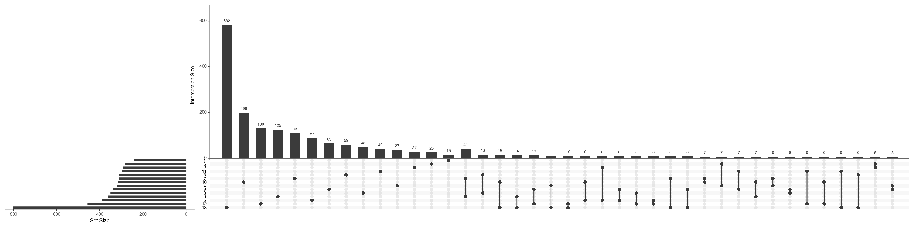
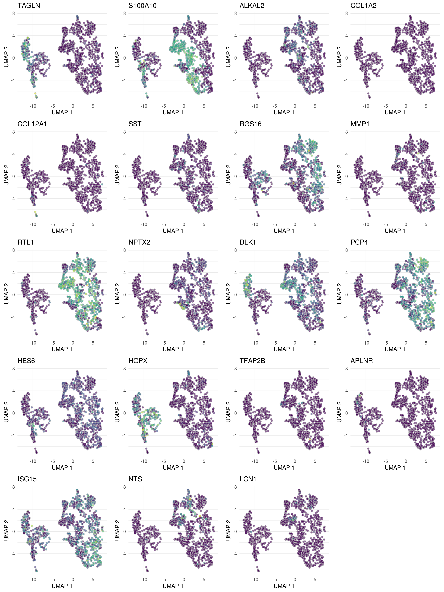
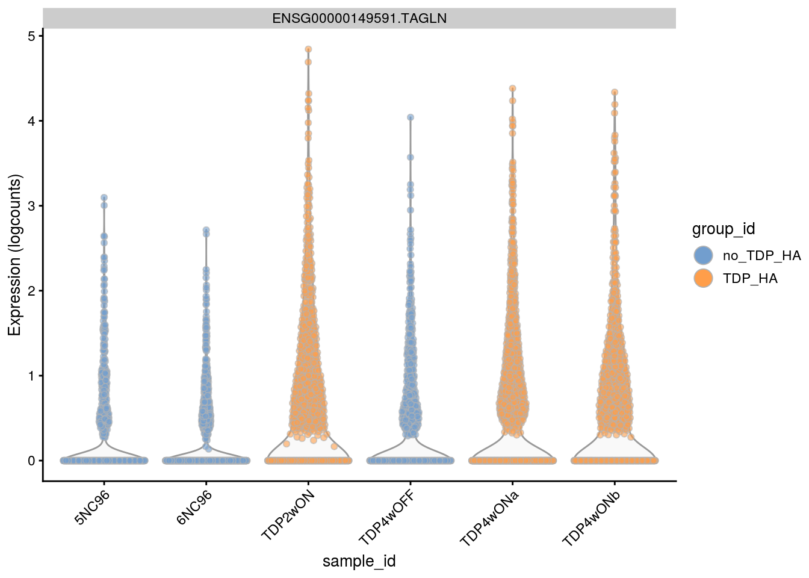
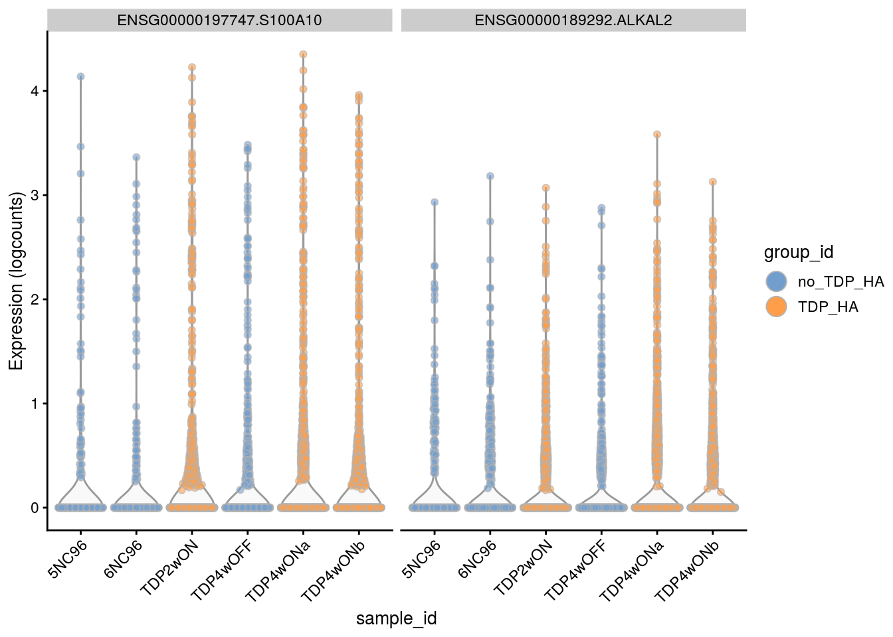
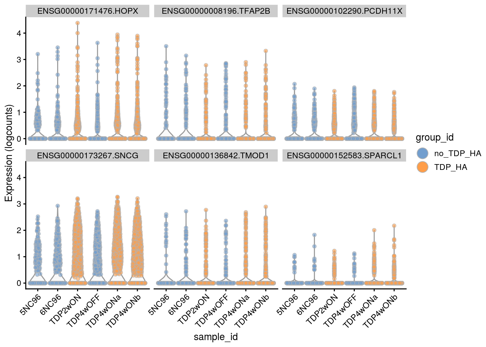
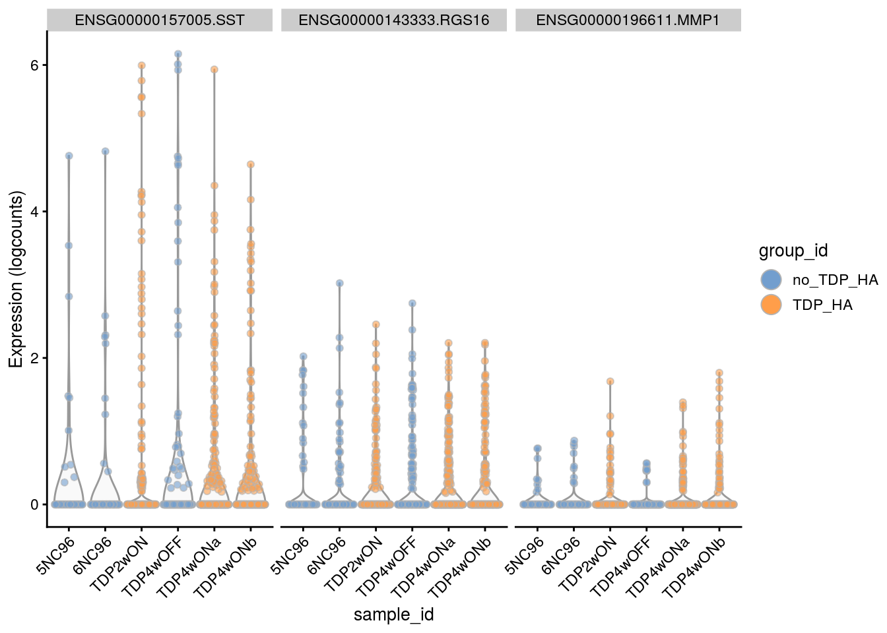
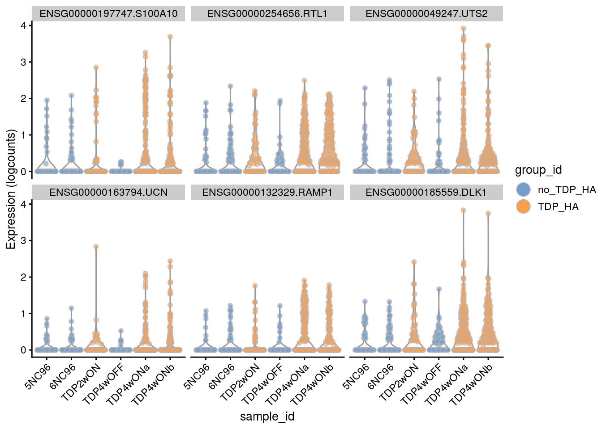
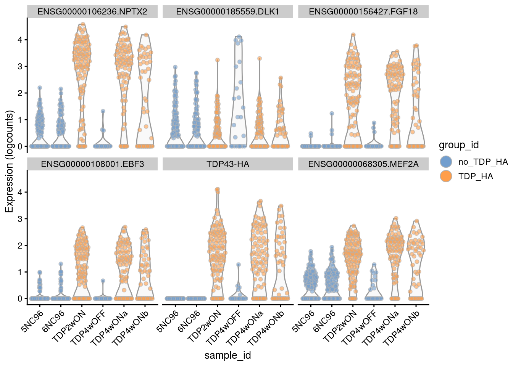
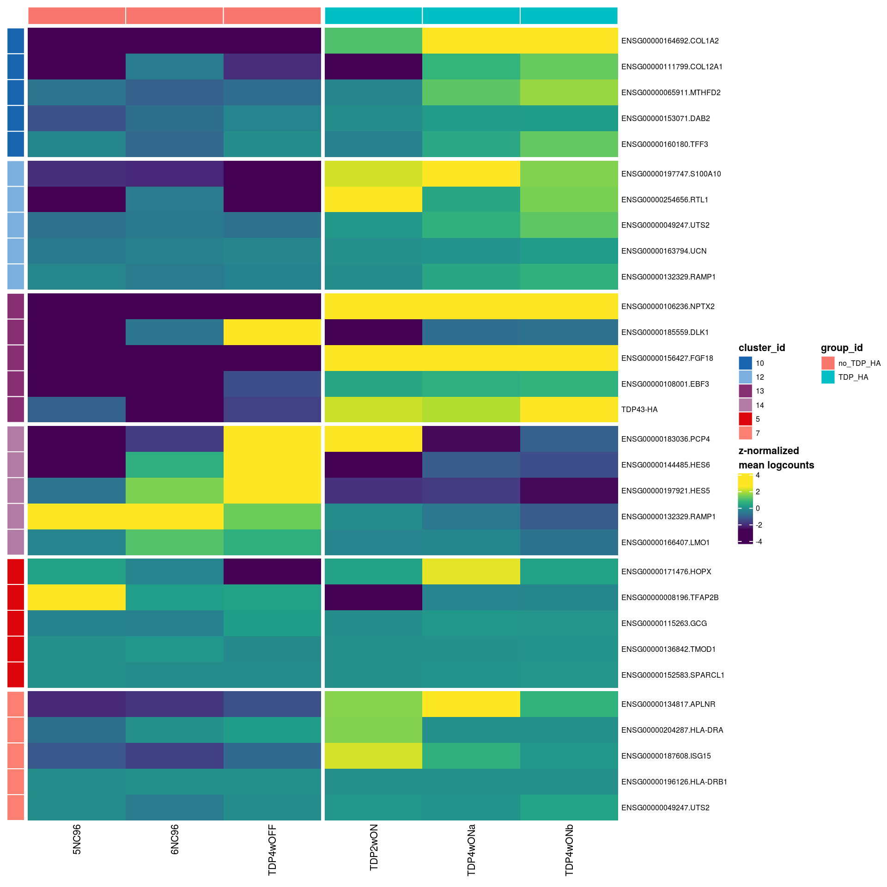
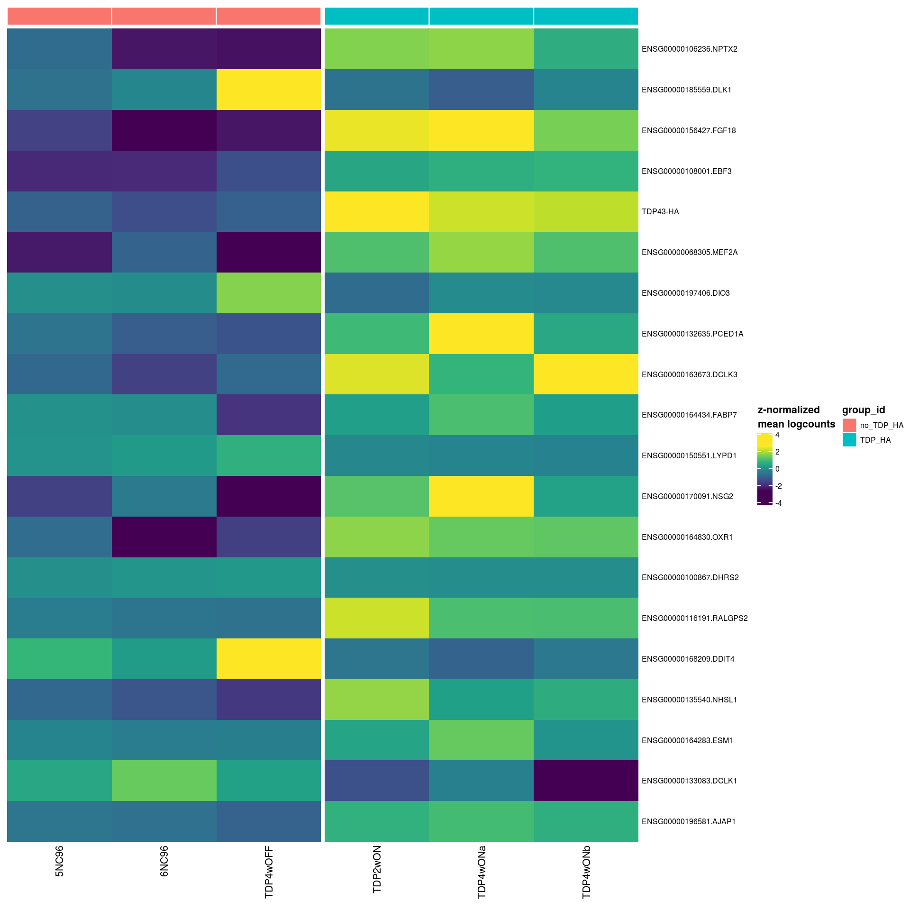

Gene expression changes in TDP-HA cultures
Katharina Hembach
2/25/2021
Last updated: 2021-03-25
Checks: 7 0
Knit directory: neural_scRNAseq/
This reproducible R Markdown analysis was created with workflowr (version 1.6.2). The Checks tab describes the reproducibility checks that were applied when the results were created. The Past versions tab lists the development history.
Great! Since the R Markdown file has been committed to the Git repository, you know the exact version of the code that produced these results.
Great job! The global environment was empty. Objects defined in the global environment can affect the analysis in your R Markdown file in unknown ways. For reproduciblity it's best to always run the code in an empty environment.
The command set.seed(20200522) was run prior to running the code in the R Markdown file. Setting a seed ensures that any results that rely on randomness, e.g. subsampling or permutations, are reproducible.
Great job! Recording the operating system, R version, and package versions is critical for reproducibility.
Nice! There were no cached chunks for this analysis, so you can be confident that you successfully produced the results during this run.
Great job! Using relative paths to the files within your workflowr project makes it easier to run your code on other machines.
Great! You are using Git for version control. Tracking code development and connecting the code version to the results is critical for reproducibility.
The results in this page were generated with repository version 3b89036. See the Past versions tab to see a history of the changes made to the R Markdown and HTML files.
Note that you need to be careful to ensure that all relevant files for the analysis have been committed to Git prior to generating the results (you can use wflow_publish or wflow_git_commit). workflowr only checks the R Markdown file, but you know if there are other scripts or data files that it depends on. Below is the status of the Git repository when the results were generated:
Ignored files:
Ignored: .DS_Store
Ignored: .Rhistory
Ignored: .Rproj.user/
Ignored: ._.DS_Store
Ignored: ._Rplots.pdf
Ignored: ._Unfiltered.pdf
Ignored: .__workflowr.yml
Ignored: ._coverage.pdf
Ignored: ._coverage_sashimi.pdf
Ignored: ._coverage_sashimi.png
Ignored: ._neural_scRNAseq.Rproj
Ignored: ._pbDS_cell_level.pdf
Ignored: ._pbDS_top_expr_umap.pdf
Ignored: ._pbDS_upset.pdf
Ignored: ._sashimi.pdf
Ignored: ._stmn2.pdf
Ignored: ._tdp.pdf
Ignored: analysis/.DS_Store
Ignored: analysis/.Rhistory
Ignored: analysis/._.DS_Store
Ignored: analysis/._01-preprocessing.Rmd
Ignored: analysis/._01-preprocessing.html
Ignored: analysis/._02.1-SampleQC.Rmd
Ignored: analysis/._03-filtering.Rmd
Ignored: analysis/._04-clustering.Rmd
Ignored: analysis/._04-clustering.knit.md
Ignored: analysis/._04.1-cell_cycle.Rmd
Ignored: analysis/._05-annotation.Rmd
Ignored: analysis/._Lam-0-NSC_no_integration.Rmd
Ignored: analysis/._Lam-01-NSC_integration.Rmd
Ignored: analysis/._Lam-02-NSC_annotation.Rmd
Ignored: analysis/._NSC-1-clustering.Rmd
Ignored: analysis/._NSC-2-annotation.Rmd
Ignored: analysis/.__site.yml
Ignored: analysis/._additional_filtering.Rmd
Ignored: analysis/._additional_filtering_clustering.Rmd
Ignored: analysis/._index.Rmd
Ignored: analysis/._organoid-01-1-qualtiy-control.Rmd
Ignored: analysis/._organoid-01-clustering.Rmd
Ignored: analysis/._organoid-02-integration.Rmd
Ignored: analysis/._organoid-03-cluster_analysis.Rmd
Ignored: analysis/._organoid-04-group_integration.Rmd
Ignored: analysis/._organoid-04-stage_integration.Rmd
Ignored: analysis/._organoid-05-group_integration_cluster_analysis.Rmd
Ignored: analysis/._organoid-05-stage_integration_cluster_analysis.Rmd
Ignored: analysis/._organoid-06-1-prepare-sce.Rmd
Ignored: analysis/._organoid-06-conos-analysis-Seurat.Rmd
Ignored: analysis/._organoid-06-conos-analysis-function.Rmd
Ignored: analysis/._organoid-06-conos-analysis.Rmd
Ignored: analysis/._organoid-06-group-integration-conos-analysis.Rmd
Ignored: analysis/._organoid-07-conos-visualization.Rmd
Ignored: analysis/._organoid-07-group-integration-conos-visualization.Rmd
Ignored: analysis/._organoid-08-conos-comparison.Rmd
Ignored: analysis/._organoid-0x-sample_integration.Rmd
Ignored: analysis/01-preprocessing_cache/
Ignored: analysis/02-1-SampleQC_cache/
Ignored: analysis/02-quality_control_cache/
Ignored: analysis/02.1-SampleQC_cache/
Ignored: analysis/03-filtering_cache/
Ignored: analysis/04-clustering_cache/
Ignored: analysis/04.1-cell_cycle_cache/
Ignored: analysis/05-annotation_cache/
Ignored: analysis/06-clustering-all-timepoints_cache/
Ignored: analysis/07-cluster-analysis-all-timepoints_cache/
Ignored: analysis/Lam-01-NSC_integration_cache/
Ignored: analysis/Lam-02-NSC_annotation_cache/
Ignored: analysis/NSC-1-clustering_cache/
Ignored: analysis/NSC-2-annotation_cache/
Ignored: analysis/TDP-01-preprocessing_cache/
Ignored: analysis/TDP-02-quality_control_cache/
Ignored: analysis/TDP-03-filtering_cache/
Ignored: analysis/TDP-04-clustering_cache/
Ignored: analysis/TDP-05-00-filtering-plasmid-QC_cache/
Ignored: analysis/TDP-05-plasmid_expression_cache/
Ignored: analysis/TDP-06-cluster_analysis_cache/
Ignored: analysis/TDP-07-01-STMN2_expression_cache/
Ignored: analysis/TDP-07-cluster_12_cache/
Ignored: analysis/TDP-08-00-clustering-HA-D96_cache/
Ignored: analysis/TDP-08-clustering-timeline-HA_cache/
Ignored: analysis/additional_filtering_cache/
Ignored: analysis/additional_filtering_clustering_cache/
Ignored: analysis/figure/
Ignored: analysis/organoid-01-1-qualtiy-control_cache/
Ignored: analysis/organoid-01-clustering_cache/
Ignored: analysis/organoid-02-integration_cache/
Ignored: analysis/organoid-03-cluster_analysis_cache/
Ignored: analysis/organoid-04-group_integration_cache/
Ignored: analysis/organoid-04-stage_integration_cache/
Ignored: analysis/organoid-05-group_integration_cluster_analysis_cache/
Ignored: analysis/organoid-05-stage_integration_cluster_analysis_cache/
Ignored: analysis/organoid-06-conos-analysis_cache/
Ignored: analysis/organoid-06-conos-analysis_test_cache/
Ignored: analysis/organoid-06-group-integration-conos-analysis_cache/
Ignored: analysis/organoid-07-conos-visualization_cache/
Ignored: analysis/organoid-07-group-integration-conos-visualization_cache/
Ignored: analysis/organoid-08-conos-comparison_cache/
Ignored: analysis/organoid-0x-sample_integration_cache/
Ignored: analysis/sample5_QC_cache/
Ignored: analysis/timepoints-01-organoid-integration_cache/
Ignored: data/.DS_Store
Ignored: data/._.DS_Store
Ignored: data/._.smbdeleteAAA17ed8b4b
Ignored: data/._Lam_figure2_markers.R
Ignored: data/._Reactive_astrocytes_markers.xlsx
Ignored: data/._known_NSC_markers.R
Ignored: data/._known_cell_type_markers.R
Ignored: data/._metadata.csv
Ignored: data/._virus_cell_tropism_markers.R
Ignored: data/._~$Reactive_astrocytes_markers.xlsx
Ignored: data/data_sushi/
Ignored: data/filtered_feature_matrices/
Ignored: output/.DS_Store
Ignored: output/._.DS_Store
Ignored: output/._NSC_cluster2_marker_genes.txt
Ignored: output/._TDP-06-no_integration_cluster12_marker_genes.txt
Ignored: output/._TDP-06-no_integration_cluster13_marker_genes.txt
Ignored: output/._organoid_integration_cluster1_marker_genes.txt
Ignored: output/Lam-01-clustering.rds
Ignored: output/NSC_1_clustering.rds
Ignored: output/NSC_cluster1_marker_genes.txt
Ignored: output/NSC_cluster2_marker_genes.txt
Ignored: output/NSC_cluster3_marker_genes.txt
Ignored: output/NSC_cluster4_marker_genes.txt
Ignored: output/NSC_cluster5_marker_genes.txt
Ignored: output/NSC_cluster6_marker_genes.txt
Ignored: output/NSC_cluster7_marker_genes.txt
Ignored: output/TDP-06-no_integration_cluster0_marker_genes.txt
Ignored: output/TDP-06-no_integration_cluster10_marker_genes.txt
Ignored: output/TDP-06-no_integration_cluster11_marker_genes.txt
Ignored: output/TDP-06-no_integration_cluster12_marker_genes.txt
Ignored: output/TDP-06-no_integration_cluster13_marker_genes.txt
Ignored: output/TDP-06-no_integration_cluster14_marker_genes.txt
Ignored: output/TDP-06-no_integration_cluster15_marker_genes.txt
Ignored: output/TDP-06-no_integration_cluster16_marker_genes.txt
Ignored: output/TDP-06-no_integration_cluster17_marker_genes.txt
Ignored: output/TDP-06-no_integration_cluster1_marker_genes.txt
Ignored: output/TDP-06-no_integration_cluster2_marker_genes.txt
Ignored: output/TDP-06-no_integration_cluster3_marker_genes.txt
Ignored: output/TDP-06-no_integration_cluster4_marker_genes.txt
Ignored: output/TDP-06-no_integration_cluster5_marker_genes.txt
Ignored: output/TDP-06-no_integration_cluster6_marker_genes.txt
Ignored: output/TDP-06-no_integration_cluster7_marker_genes.txt
Ignored: output/TDP-06-no_integration_cluster8_marker_genes.txt
Ignored: output/TDP-06-no_integration_cluster9_marker_genes.txt
Ignored: output/TDP-06_scran_markers.rds
Ignored: output/additional_filtering.rds
Ignored: output/conos/
Ignored: output/conos_organoid-06-conos-analysis.rds
Ignored: output/conos_organoid-06-group-integration-conos-analysis.rds
Ignored: output/figures/
Ignored: output/organoid_integration_cluster10_marker_genes.txt
Ignored: output/organoid_integration_cluster11_marker_genes.txt
Ignored: output/organoid_integration_cluster12_marker_genes.txt
Ignored: output/organoid_integration_cluster13_marker_genes.txt
Ignored: output/organoid_integration_cluster14_marker_genes.txt
Ignored: output/organoid_integration_cluster15_marker_genes.txt
Ignored: output/organoid_integration_cluster16_marker_genes.txt
Ignored: output/organoid_integration_cluster17_marker_genes.txt
Ignored: output/organoid_integration_cluster1_marker_genes.txt
Ignored: output/organoid_integration_cluster2_marker_genes.txt
Ignored: output/organoid_integration_cluster3_marker_genes.txt
Ignored: output/organoid_integration_cluster4_marker_genes.txt
Ignored: output/organoid_integration_cluster5_marker_genes.txt
Ignored: output/organoid_integration_cluster6_marker_genes.txt
Ignored: output/organoid_integration_cluster7_marker_genes.txt
Ignored: output/organoid_integration_cluster8_marker_genes.txt
Ignored: output/organoid_integration_cluster9_marker_genes.txt
Ignored: output/sce_01_preprocessing.rds
Ignored: output/sce_02_quality_control.rds
Ignored: output/sce_03_filtering.rds
Ignored: output/sce_03_filtering_all_genes.rds
Ignored: output/sce_06-1-prepare-sce.rds
Ignored: output/sce_TDP_01_preprocessing.rds
Ignored: output/sce_TDP_02_quality_control.rds
Ignored: output/sce_TDP_03_filtering.rds
Ignored: output/sce_TDP_03_filtering_all_genes.rds
Ignored: output/sce_organoid-01-clustering.rds
Ignored: output/sce_preprocessing.rds
Ignored: output/so_04-group_integration.rds
Ignored: output/so_04-stage_integration.rds
Ignored: output/so_04_1_cell_cycle.rds
Ignored: output/so_04_clustering.rds
Ignored: output/so_06-clustering_all_timepoints.rds
Ignored: output/so_08-00_clustering_HA_D96.rds
Ignored: output/so_08-clustering_timeline_HA.rds
Ignored: output/so_0x-sample_integration.rds
Ignored: output/so_TDP-06-cluster-analysis.rds
Ignored: output/so_TDP_04_clustering.rds
Ignored: output/so_TDP_05_plasmid_expression.rds
Ignored: output/so_additional_filtering_clustering.rds
Ignored: output/so_integrated_organoid-02-integration.rds
Ignored: output/so_merged_organoid-02-integration.rds
Ignored: output/so_organoid-01-clustering.rds
Ignored: output/so_sample_organoid-01-clustering.rds
Ignored: scripts/.DS_Store
Ignored: scripts/._.DS_Store
Ignored: scripts/._bu_Rcode.R
Ignored: scripts/._plasmid_expression.sh
Untracked files:
Untracked: Filtered.pdf
Untracked: Rplots.pdf
Untracked: Unfiltered
Untracked: Unfiltered.pdf
Untracked: analysis/Lam-0-NSC_no_integration.Rmd
Untracked: analysis/TDP-07-01-STMN2_expression copy.Rmd
Untracked: analysis/additional_filtering.Rmd
Untracked: analysis/additional_filtering_clustering.Rmd
Untracked: analysis/organoid-01-1-qualtiy-control.Rmd
Untracked: analysis/organoid-06-conos-analysis-Seurat.Rmd
Untracked: analysis/organoid-06-conos-analysis-function.Rmd
Untracked: analysis/organoid-07-conos-visualization.Rmd
Untracked: analysis/organoid-07-group-integration-conos-visualization.Rmd
Untracked: analysis/organoid-08-conos-comparison.Rmd
Untracked: analysis/organoid-0x-sample_integration.Rmd
Untracked: analysis/sample5_QC.Rmd
Untracked: coverage.pdf
Untracked: coverage_sashimi.pdf
Untracked: coverage_sashimi.png
Untracked: data/Homo_sapiens.GRCh38.98.sorted.gtf
Untracked: data/Kanton_et_al/
Untracked: data/Lam_et_al/
Untracked: data/Sep2020/
Untracked: data/reference/
Untracked: data/virus_cell_tropism_markers.R
Untracked: data/~$Reactive_astrocytes_markers.xlsx
Untracked: pbDS_cell_level.pdf
Untracked: pbDS_heatmap.pdf
Untracked: pbDS_top_expr_umap.pdf
Untracked: pbDS_upset.pdf
Untracked: sashimi.pdf
Untracked: scripts/bu_Rcode.R
Untracked: scripts/bu_code.Rmd
Untracked: scripts/salmon-latest_linux_x86_64/
Untracked: stmn2.pdf
Untracked: tdp.pdf
Unstaged changes:
Modified: analysis/05-annotation.Rmd
Modified: analysis/Lam-02-NSC_annotation.Rmd
Modified: analysis/TDP-04-clustering.Rmd
Modified: analysis/TDP-06-cluster_analysis.Rmd
Modified: analysis/_site.yml
Modified: analysis/organoid-02-integration.Rmd
Modified: analysis/organoid-04-group_integration.Rmd
Modified: analysis/organoid-06-conos-analysis.Rmd
Modified: analysis/timepoints-01-organoid-integration.Rmd
Note that any generated files, e.g. HTML, png, CSS, etc., are not included in this status report because it is ok for generated content to have uncommitted changes.
These are the previous versions of the repository in which changes were made to the R Markdown (analysis/TDP-08-01-HA-D96-expression-changes.Rmd) and HTML (docs/TDP-08-01-HA-D96-expression-changes.html) files. If you've configured a remote Git repository (see ?wflow_git_remote), click on the hyperlinks in the table below to view the files as they were in that past version.
| File | Version | Author | Date | Message |
|---|---|---|---|---|
| Rmd | 3b89036 | khembach | 2021-03-25 | include 4wOFF sample and correct batch efffects |
| html | 33f8c13 | khembach | 2021-03-04 | Build site. |
| Rmd | de2f7b2 | khembach | 2021-03-04 | DS analysis with muscat |
| html | 3c440f5 | khembach | 2021-02-25 | Build site. |
| Rmd | d8a5aa4 | khembach | 2021-02-25 | differential analysis of effect of TDP-HA expression in culture |
Load packages
library(Seurat)
library(SingleCellExperiment)
library(dplyr)
library(scran)
library(Seurat)
library(ComplexHeatmap)
library(cowplot)
library(ggplot2)
library(muscat)
library(purrr)
library(RColorBrewer)
library(viridis)
library(edgeR)
library(stringr)
library(UpSetR)
library(scater)
library(BiocParallel)Load data & convert to SCE
so <- readRDS(file.path("output", "so_08-00_clustering_HA_D96.rds"))
sce <- as.SingleCellExperiment(so, assay = "RNA")
colData(sce) <- as.data.frame(colData(sce)) %>%
mutate_if(is.character, as.factor) %>%
DataFrame(row.names = colnames(sce))Cluster-sample counts
# set cluster IDs to resolution 0.4 clustering
so <- SetIdent(so, value = "RNA_snn_res.0.4")
so@meta.data$cluster_id <- Idents(so)
sce$cluster_id <- Idents(so)
(n_cells <- table(sce$cluster_id, sce$sample_id))
5NC96 6NC96 TDP2wON TDP4wOFF TDP4wONa TDP4wONb
0 770 1028 1057 803 1586 934
1 443 631 1157 1003 1580 1362
2 306 525 916 816 1101 1118
3 355 289 643 582 1000 802
4 185 311 703 605 916 750
5 219 307 694 502 718 763
6 150 216 419 383 559 505
7 221 293 582 413 479 241
8 111 170 377 347 532 434
9 53 94 279 179 387 303
10 465 415 118 158 70 22
11 59 95 223 187 320 258
12 63 98 66 63 240 145
13 134 118 117 25 91 53
14 3 5 48 11 44 31
15 1 0 7 0 42 1Relative cluster-abundances
How are the samples distributed across clusters?
fqs <- prop.table(n_cells, margin = 2)
mat <- as.matrix(unclass(fqs))
Heatmap(mat,
col = rev(magma(12))[-c(1,2)],
name = "Frequency",
cluster_rows = FALSE,
cluster_columns = FALSE,
row_names_side = "left",
row_title = "cluster_id",
column_title = "sample_id",
column_title_side = "bottom",
rect_gp = gpar(col = "white"),
cell_fun = function(i, j, x, y, width, height, fill)
grid.text(round(mat[j, i] * 100, 2), x = x, y = y,
gp = gpar(col = "white", fontsize = 8)))
| Version | Author | Date |
|---|---|---|
| 3c440f5 | khembach | 2021-02-25 |
DR colored by cluster ID
cs <- sample(colnames(so), 1e4)
.plot_dr <- function(so, dr, id)
DimPlot(so, cells = cs, group.by = id, reduction = dr, pt.size = 0.4) +
guides(col = guide_legend(nrow = 11,
override.aes = list(size = 3, alpha = 1))) +
theme_void() + theme(aspect.ratio = 1)
ids <- c("group_id", "sample_id", "ident")
for (id in ids) {
cat("## ", id, "\n")
p1 <- .plot_dr(so, "tsne", id)
lgd <- get_legend(p1)
p1 <- p1 + theme(legend.position = "none")
p2 <- .plot_dr(so, "umap", id) + theme(legend.position = "none")
ps <- plot_grid(plotlist = list(p1, p2), nrow = 1)
p <- plot_grid(ps, lgd, nrow = 1, rel_widths = c(1, 0.2))
print(p)
cat("\n\n")
}


DR colored by cluster ID per sample
To better see how the cells from different clusters overlap, we only plot the cells from one samples at a time.
.plot_dr <- function(so, dr, id, cs) {
DimPlot(so, cells = cs, group.by = id, reduction = dr, pt.size = 0.4, cols = ) +
guides(col = guide_legend(nrow = 11,
override.aes = list(size = 3, alpha = 1))) +
theme_void() + theme(aspect.ratio = 1) +
theme(plot.title = element_text(hjust = 0.5))}
# ids <- unique(so$sample_id)
p1 <- .plot_dr(so, "umap", "ident", colnames(so[,so$sample_id == "5NC96"])) +
theme(legend.position = "none") + ggtitle("5NC96")
p2 <- .plot_dr(so, "umap", "ident", colnames(so[,so$sample_id == "6NC96"])) +
theme(legend.position = "none") + ggtitle("6NC96")
p3 <- .plot_dr(so, "umap", "ident", colnames(so[,so$sample_id == "TDP4wOFF"])) +
theme(legend.position = "none") + ggtitle("TDP4wOFF")
p4 <- .plot_dr(so, "umap", "ident", colnames(so[,so$sample_id == "TDP2wON"])) +
theme(legend.position = "none") + ggtitle("TDP2wON")
p5 <- .plot_dr(so, "umap", "ident", colnames(so[,so$sample_id == "TDP4wONa"])) +
theme(legend.position = "none") + ggtitle("TDP4wONa")
p6 <- .plot_dr(so, "umap", "ident", colnames(so[,so$sample_id == "TDP4wONb"])) +
theme(legend.position = "none") + ggtitle("TDP4wONb")
ps <- plot_grid(plotlist = list(p1, p2, p3, p4, p5, p6), nrow = 2)
lgd <- get_legend(p5)
p <- plot_grid(ps, lgd, nrow = 1, rel_widths = c(1, 0.2))
p
| Version | Author | Date |
|---|---|---|
| 3c440f5 | khembach | 2021-02-25 |
DE analysis
We want to test for differences in gene expression between cells from D96 samples and the TDP-HA expressing samples. We test for differences in the neuronal cells (right cell cloud in UMAP).
Preprocessing with muscat
We filter and only keep cells from D96 and 4wON.
sce$id <- sce$sample_id
levels(sce$id) <- c("D96", "D96", "ON2w", "OFF4w", "ON4w", "ON4w")
(sce <- prepSCE(sce,
kid = "cluster_id", # subpopulation assignments
gid = "id", # group IDs (ctrl/stim)
sid = "sample_id", # sample IDs (ctrl/stim.1234)
drop = FALSE)) # drop all other colData columnsclass: SingleCellExperiment
dim: 14073 39003
metadata(1): experiment_info
assays(2): counts logcounts
rownames(14073): ENSG00000187634.SAMD11 ENSG00000188976.NOC2L ...
ENSG00000227234.SPANXB1 ENSG00000198573.SPANXC
rowData names(5): vst.mean vst.variance vst.variance.expected
vst.variance.standardized vst.variable
colnames(39003): tdp_ha_AAACCCACATGTCTAG-1.TDP2wON
tdp_ha_AAACCCATCACGTAGT-1.TDP2wON ... D96_TTTGTTGCACTCGATA-1.6NC96
D96_TTTGTTGTCGTGTGAT-1.6NC96
colData names(45): cluster_id sample_id ... TDPHA_snn_res.0.4 ident
reducedDimNames(3): PCA TSNE UMAP
altExpNames(0):nk <- length(kids <- levels(sce$cluster_id))
ns <- length(sids <- levels(sce$sample_id))
names(kids) <- kids; names(sids) <- sids
# nb. of cells per cluster-sample
t(table(sce$cluster_id, sce$sample_id))
0 1 2 3 4 5 6 7 8 9 10 11 12
5NC96 770 443 306 355 185 219 150 221 111 53 465 59 63
6NC96 1028 631 525 289 311 307 216 293 170 94 415 95 98
TDP2wON 1057 1157 916 643 703 694 419 582 377 279 118 223 66
TDP4wOFF 803 1003 816 582 605 502 383 413 347 179 158 187 63
TDP4wONa 1586 1580 1101 1000 916 718 559 479 532 387 70 320 240
TDP4wONb 934 1362 1118 802 750 763 505 241 434 303 22 258 145
13 14 15
5NC96 134 3 1
6NC96 118 5 0
TDP2wON 117 48 7
TDP4wOFF 25 11 0
TDP4wONa 91 44 42
TDP4wONb 53 31 1Compute pseudobulk counts
We sum the gene counts per cluster
pb <- aggregateData(sce, assay = "counts", by = c("cluster_id", "sample_id"),
fun = "sum")
# one sheet per subpopulation = cluster
assayNames(pb) [1] "0" "1" "2" "3" "4" "5" "6" "7" "8" "9" "10" "11" "12" "13" "14"
[16] "15"# pseudobulks for 1st cluster
t(head(assay(pb))) ENSG00000187634.SAMD11 ENSG00000188976.NOC2L ENSG00000187961.KLHL17
5NC96 125 286 79
6NC96 179 400 106
TDP2wON 85 475 104
TDP4wOFF 80 328 77
TDP4wONa 105 416 109
TDP4wONb 84 362 78
ENSG00000188290.HES4 ENSG00000187608.ISG15 ENSG00000188157.AGRN
5NC96 3784 641 985
6NC96 6195 897 1442
TDP2wON 8591 2656 1345
TDP4wOFF 5736 860 999
TDP4wONa 12971 2232 1804
TDP4wONb 8302 1522 1253Pseudobulk MDS plot
## modified version of the muscat function to plot different MDS dimensions
pbMDS_mod <- function(x, dim1 = 1, dim2 = 2) {
# check validity of input pseudobulk-SCE
# (cells should have been aggregated by cluster-sample)
muscat:::.check_pbs(x, check_by = TRUE)
y <- as.list(assays(x))
y <- do.call("cbind", y)
y <- y[, (j <- c(t(metadata(x)$n_cells)) != 0)]
d <- DGEList(unname(y), remove.zeros = TRUE)
d <- calcNormFactors(d)
mds <- plotMDS.DGEList(d, plot = FALSE, dim.plot = c(dim1, dim2))
nk <- length(kids <- assayNames(x))
ss <- rep(colnames(x), nk)
ks <- rep(kids, each = ncol(x))
if (any(!j)) {
txt <- paste(sQuote(ks[!j]), sQuote(ss[!j]), sep = "-")
message("Removing cluster-sample instance(s) ",
paste(txt, collapse = ", "))
}
df <- data.frame(
MDS1 = mds$x, MDS2 = mds$y,
cluster_id = factor(ks[j], levels = kids),
group_id = rep(x$group_id, nk)[j])
cols <- muscat:::.cluster_colors
if (nk > length(cols))
cols <- colorRampPalette(cols)(nk)
ggplot(df, aes_string(x = "MDS1", y = "MDS2",
col = "cluster_id", shape = "group_id")) +
scale_color_manual(values = cols) +
geom_point(size = 3, alpha = 0.8) +
guides(color = guide_legend(override.aes = list(alpha = 1))) +
theme_bw() + theme(aspect.ratio = 1,
axis.text = element_text(color = "black"),
panel.grid.minor = element_blank(),
panel.grid.major = element_line(size = 0.2, color = "lightgrey")) +
labs(x = paste0("MDS", dim1), y = paste0("MDS", dim2))
}
pbMDS(pb) + guides(col = guide_legend(nrow = 10)) + theme_bw(base_size = 14)
pbMDS_mod(pb, 1, 3) + guides(col = guide_legend(nrow = 10)) +
theme_bw(base_size = 14)
| Version | Author | Date |
|---|---|---|
| 33f8c13 | khembach | 2021-03-04 |
pbMDS_mod(pb, 1, 4) + guides(col = guide_legend(nrow = 10)) +
theme_bw(base_size = 14)
| Version | Author | Date |
|---|---|---|
| 33f8c13 | khembach | 2021-03-04 |
Subsetting of D96 and ON4w samples
We only keep the two replicates of the D96 and ON4w groups because ON2w and OFF4w do not have any replicates.
sce_sub <- sce[, sce$group_id %in% c("D96", "ON4w")]
sce_sub$sample_id <- droplevels(sce_sub$sample_id)
sce_sub$id <- sce_sub$sample_id
levels(sce_sub$id) <- c("D96", "D96", "ON4w", "ON4w")
(sce_sub <- prepSCE(sce_sub,
kid = "cluster_id", # subpopulation assignments
gid = "id", # group IDs (ctrl/stim)
sid = "sample_id", # sample IDs (ctrl/stim.1234)
drop = FALSE)) # drop all other colData columnsclass: SingleCellExperiment
dim: 14073 25520
metadata(1): experiment_info
assays(2): counts logcounts
rownames(14073): ENSG00000187634.SAMD11 ENSG00000188976.NOC2L ...
ENSG00000227234.SPANXB1 ENSG00000198573.SPANXC
rowData names(5): vst.mean vst.variance vst.variance.expected
vst.variance.standardized vst.variable
colnames(25520): tdp_ha_AAACCCACAGGATCTT-1.TDP4wONa
tdp_ha_AAACCCAGTCTCTCTG-1.TDP4wONa ... D96_TTTGTTGCACTCGATA-1.6NC96
D96_TTTGTTGTCGTGTGAT-1.6NC96
colData names(46): cluster_id sample_id ... TDPHA_snn_res.0.4 ident
reducedDimNames(3): PCA TSNE UMAP
altExpNames(0):nk <- length(kids <- levels(sce_sub$cluster_id))
ns <- length(sids <- levels(sce_sub$sample_id))
names(kids) <- kids; names(sids) <- sids
# nb. of cells per cluster-sample
t(table(sce_sub$cluster_id, sce_sub$sample_id))
0 1 2 3 4 5 6 7 8 9 10 11 12
5NC96 770 443 306 355 185 219 150 221 111 53 465 59 63
6NC96 1028 631 525 289 311 307 216 293 170 94 415 95 98
TDP4wONa 1586 1580 1101 1000 916 718 559 479 532 387 70 320 240
TDP4wONb 934 1362 1118 802 750 763 505 241 434 303 22 258 145
13 14 15
5NC96 134 3 1
6NC96 118 5 0
TDP4wONa 91 44 42
TDP4wONb 53 31 1Compute pseudobulk counts
We sum the gene counts per cluster.
pb <- aggregateData(sce_sub, assay = "counts", by = c("cluster_id", "sample_id"),
fun = "sum")
# one sheet per subpopulation = cluster
assayNames(pb) [1] "0" "1" "2" "3" "4" "5" "6" "7" "8" "9" "10" "11" "12" "13" "14"
[16] "15"# pseudobulks for 1st cluster
t(head(assay(pb))) ENSG00000187634.SAMD11 ENSG00000188976.NOC2L ENSG00000187961.KLHL17
5NC96 125 286 79
6NC96 179 400 106
TDP4wONa 105 416 109
TDP4wONb 84 362 78
ENSG00000188290.HES4 ENSG00000187608.ISG15 ENSG00000188157.AGRN
5NC96 3784 641 985
6NC96 6195 897 1442
TDP4wONa 12971 2232 1804
TDP4wONb 8302 1522 1253Pseudobulk MDS plot
pbMDS(pb) + guides(col = guide_legend(nrow = 10)) + theme_bw(base_size = 14) 
| Version | Author | Date |
|---|---|---|
| 33f8c13 | khembach | 2021-03-04 |
pbMDS_mod(pb, 1, 3) + guides(col = guide_legend(nrow = 10)) +
theme_bw(base_size = 14)
| Version | Author | Date |
|---|---|---|
| 33f8c13 | khembach | 2021-03-04 |
pbMDS_mod(pb, 1, 4) + guides(col = guide_legend(nrow = 10)) +
theme_bw(base_size = 14)
| Version | Author | Date |
|---|---|---|
| 33f8c13 | khembach | 2021-03-04 |
Pseudobulk differential state analysis
# run DS analysis
# construct design & contrast matrix
ei <- metadata(sce_sub)$experiment_info
mm <- model.matrix(~ 0 + ei$group_id)
dimnames(mm) <- list(ei$sample_id, levels(ei$group_id))
contrast <- makeContrasts("ON4w-D96", levels = mm)
mm D96 ON4w
TDP4wONa 0 1
TDP4wONb 0 1
5NC96 1 0
6NC96 1 0
attr(,"assign")
[1] 1 1
attr(,"contrasts")
attr(,"contrasts")$`ei$group_id`
[1] "contr.treatment"contrast Contrasts
Levels ON4w-D96
D96 -1
ON4w 1# run DS analysis
res <- pbDS(pb, design = mm, contrast = contrast, verbose = FALSE)
# access results table for 1st comparison
tbl <- res$table[[1]]
# one data.frame per cluster
names(tbl) [1] "0" "1" "2" "3" "4" "5" "6" "7" "8" "9" "10" "11" "12" "13"# view results for 1st cluster
k1 <- tbl[[1]]
head(format(k1[, -ncol(k1)], digits = 2)) gene cluster_id logFC logCPM F p_val p_adj.loc
1 ENSG00000187634.SAMD11 0 -8.3e-01 3.0389 3.8e+01 2.3e-04 1.3e-03
2 ENSG00000188976.NOC2L 0 3.9e-02 4.5922 1.5e-01 7.1e-01 7.7e-01
3 ENSG00000187961.KLHL17 0 -1.4e-01 2.6335 7.4e-01 4.1e-01 5.0e-01
4 ENSG00000188290.HES4 0 9.4e-01 8.9569 7.9e+01 1.6e-05 2.3e-04
5 ENSG00000187608.ISG15 0 1.1e+00 6.4075 1.9e+02 5.2e-07 6.8e-05
6 ENSG00000188157.AGRN 0 1.8e-01 6.4783 6.0e+00 3.9e-02 7.1e-02
p_adj.glb
1 1.0e+00
2 1.0e+00
3 1.0e+00
4 1.0e+00
5 8.9e-02
6 1.0e+00Results filtering
# filter FDR < 5%, abs(logFC) > 1 & sort by adj. p-value
tbl_fil <- lapply(tbl, function(u) {
u <- dplyr::filter(u, p_adj.loc < 0.01, abs(logFC) > 1)
dplyr::arrange(u, p_adj.loc)
})
# nb. of DS genes & % of total by cluster
n_de <- vapply(tbl_fil, nrow, numeric(1))
p_de <- format(n_de / nrow(sce_sub) * 100, digits = 3)
data.frame("#DS" = n_de, "%DS" = p_de, check.names = FALSE) #DS %DS
0 836 5.94
1 782 5.56
2 758 5.39
3 864 6.14
4 713 5.07
5 663 4.71
6 459 3.26
7 471 3.35
8 545 3.87
9 502 3.57
10 318 2.26
11 341 2.42
12 493 3.50
13 817 5.81# view top 3 hits in each cluster
top2 <- bind_rows(lapply(tbl_fil, slice_min, p_adj.loc, n = 3))
# top2$gene <- str_split(top2$gene, pattern = "\\.", simplify = TRUE)[,2]
# increase line width for printing of the full table
options(width = 100)
format(top2[, -ncol(top2)], digits = 2) gene cluster_id logFC logCPM F p_val p_adj.loc p_adj.glb
1 ENSG00000149591.TAGLN 0 2.4 7.2 1112 3.7e-10 4.7e-06 6.4e-05
2 ENSG00000121900.TMEM54 0 1.8 5.9 602 4.6e-09 3.0e-05 8.0e-04
3 ENSG00000158710.TAGLN2 0 1.7 7.3 480 1.2e-08 4.0e-05 2.0e-03
4 ENSG00000267855.NDUFA7 0 -2.1 5.3 474 1.2e-08 4.0e-05 2.1e-03
5 ENSG00000049247.UTS2 1 1.9 9.5 542 4.4e-11 5.8e-07 7.7e-06
6 ENSG00000181649.PHLDA2 1 1.8 7.1 429 1.7e-10 6.3e-07 2.9e-05
7 ENSG00000217930.PAM16 1 2.7 4.5 437 1.5e-10 6.3e-07 2.6e-05
8 ENSG00000240972.MIF 1 2.5 10.0 418 1.9e-10 6.3e-07 3.3e-05
9 ENSG00000168843.FSTL5 2 -1.7 5.9 423 6.2e-11 1.6e-07 1.1e-05
10 ENSG00000004059.ARF5 2 2.0 8.0 430 5.7e-11 1.6e-07 9.8e-06
11 ENSG00000147571.CRH 2 2.6 8.4 452 4.2e-11 1.6e-07 7.2e-06
12 ENSG00000181649.PHLDA2 2 2.2 6.4 489 2.6e-11 1.6e-07 4.5e-06
13 ENSG00000240972.MIF 2 2.5 10.1 477 3.0e-11 1.6e-07 5.2e-06
14 ENSG00000189184.PCDH18 3 -1.6 5.7 324 2.7e-08 6.3e-05 4.6e-03
15 ENSG00000168843.FSTL5 3 -1.7 4.7 283 4.8e-08 6.3e-05 8.2e-03
16 ENSG00000004059.ARF5 3 1.9 8.1 340 2.2e-08 6.3e-05 3.7e-03
17 ENSG00000159167.STC1 3 1.6 7.7 344 2.1e-08 6.3e-05 3.6e-03
18 ENSG00000147655.RSPO2 3 -2.1 3.5 283 4.8e-08 6.3e-05 8.2e-03
19 ENSG00000171246.NPTX1 3 2.0 5.4 367 1.5e-08 6.3e-05 2.7e-03
20 ENSG00000176014.TUBB6 3 1.7 5.3 312 3.1e-08 6.3e-05 5.4e-03
21 ENSG00000081138.CDH7 3 -1.6 6.8 293 4.1e-08 6.3e-05 7.1e-03
22 ENSG00000240972.MIF 3 2.4 10.2 454 6.1e-09 6.3e-05 1.1e-03
23 ENSG00000120948.TARDBP-alevin 3 10.8 3.2 416 4.1e-08 6.3e-05 7.1e-03
24 ENSG00000240972.MIF 4 2.6 10.2 471 3.6e-12 4.6e-08 6.1e-07
25 ENSG00000147571.CRH 4 2.0 9.4 364 2.0e-11 1.3e-07 3.5e-06
26 ENSG00000049247.UTS2 4 1.8 9.8 272 1.4e-10 2.3e-07 2.5e-05
27 ENSG00000265972.TXNIP 4 -1.5 5.8 276 1.3e-10 2.3e-07 2.3e-05
28 ENSG00000196230.TUBB 4 1.6 11.1 276 1.3e-10 2.3e-07 2.3e-05
29 ENSG00000004059.ARF5 4 2.2 8.0 291 9.2e-11 2.3e-07 1.6e-05
30 ENSG00000181649.PHLDA2 4 2.0 7.8 275 1.3e-10 2.3e-07 2.3e-05
31 ENSG00000105649.RAB3A 4 1.5 7.9 271 1.5e-10 2.3e-07 2.5e-05
32 ENSG00000135919.SERPINE2 5 1.9 7.8 461 5.9e-12 3.3e-08 1.0e-06
33 ENSG00000134363.FST 5 2.1 6.9 423 1.0e-11 3.3e-08 1.8e-06
34 ENSG00000197406.DIO3 5 2.2 7.9 437 8.5e-12 3.3e-08 1.5e-06
35 ENSG00000240972.MIF 5 2.7 10.2 519 2.7e-12 3.3e-08 4.6e-07
36 ENSG00000004059.ARF5 6 2.0 8.0 447 8.6e-11 5.3e-07 1.5e-05
37 ENSG00000240972.MIF 6 2.6 10.3 485 5.4e-11 5.3e-07 9.2e-06
38 ENSG00000181649.PHLDA2 6 1.8 6.7 303 8.1e-10 3.3e-06 1.4e-04
39 ENSG00000240972.MIF 7 2.6 10.3 362 1.4e-17 1.6e-13 2.4e-12
40 ENSG00000004059.ARF5 7 1.9 7.2 298 1.7e-16 1.0e-12 3.0e-11
41 ENSG00000125740.FOSB 7 -2.0 5.8 250 1.6e-15 6.3e-12 2.8e-10
42 ENSG00000240972.MIF 8 2.4 10.1 388 3.1e-13 3.9e-09 5.4e-08
43 ENSG00000124614.RPS10 8 -1.5 7.9 241 1.5e-11 9.5e-08 2.6e-06
44 ENSG00000217930.PAM16 8 3.0 4.6 211 4.5e-11 1.4e-07 7.7e-06
45 ENSG00000128228.SDF2L1 8 1.7 6.1 211 4.5e-11 1.4e-07 7.7e-06
46 ENSG00000004059.ARF5 9 1.9 8.0 294 1.0e-11 6.5e-08 1.8e-06
47 ENSG00000240972.MIF 9 2.3 10.3 312 6.7e-12 6.5e-08 1.2e-06
48 ENSG00000124614.RPS10 9 -1.7 8.1 249 3.7e-11 1.5e-07 6.3e-06
49 ENSG00000111799.COL12A1 10 2.9 5.8 397 2.6e-08 1.6e-04 4.5e-03
50 ENSG00000160180.TFF3 10 3.9 8.3 405 2.4e-08 1.6e-04 4.2e-03
51 ENSG00000164692.COL1A2 10 4.3 8.6 328 5.7e-08 1.8e-04 9.8e-03
52 ENSG00000142173.COL6A2 10 2.5 9.1 322 6.2e-08 1.8e-04 1.1e-02
53 ENSG00000164326.CARTPT 11 3.4 8.3 214 4.3e-09 2.4e-05 7.5e-04
54 ENSG00000004059.ARF5 11 1.9 7.9 193 7.9e-09 2.4e-05 1.4e-03
55 ENSG00000103888.CEMIP 11 2.2 6.8 202 6.0e-09 2.4e-05 1.0e-03
56 ENSG00000240972.MIF 11 2.6 10.5 219 3.8e-09 2.4e-05 6.5e-04
57 ENSG00000177606.JUN 12 -1.8 7.6 277 2.0e-15 1.2e-11 3.4e-10
58 ENSG00000240972.MIF 12 2.2 10.1 276 2.1e-15 1.2e-11 3.6e-10
59 ENSG00000004059.ARF5 12 1.8 8.1 224 2.4e-14 9.5e-11 4.2e-09
60 ENSG00000156427.FGF18 13 8.9 8.7 518 4.8e-12 2.2e-08 8.3e-07
61 ENSG00000108001.EBF3 13 4.8 7.3 498 6.2e-12 2.2e-08 1.1e-06
62 TDP43-HA 13 12.8 8.2 654 4.8e-12 2.2e-08 8.3e-07Calculating expression frequency
We filter out genes that are not expressed in at least 10% of cells of one group.
frq <- calcExprFreqs(sce_sub, assay = "counts", th = 0)
# one sheet per cluster
assayNames(frq) [1] "0" "1" "2" "3" "4" "5" "6" "7" "8" "9" "10" "11" "12" "13" "14" "15"# expression frequencies in each
# sample & group; 1st cluster
t(head(assay(frq), 5)) ENSG00000187634.SAMD11 ENSG00000188976.NOC2L ENSG00000187961.KLHL17 ENSG00000188290.HES4
5NC96 0.10519481 0.2974026 0.09480519 0.8922078
6NC96 0.11867704 0.3112840 0.09630350 0.9027237
TDP4wONa 0.05233291 0.2307692 0.06809584 0.9590164
TDP4wONb 0.06316916 0.3211991 0.08029979 0.9635974
D96 0.11290323 0.3053393 0.09566185 0.8982202
ON4w 0.05634921 0.2642857 0.07261905 0.9607143
ENSG00000187608.ISG15
5NC96 0.4818182
6NC96 0.5126459
TDP4wONa 0.6532156
TDP4wONb 0.6937901
D96 0.4994438
ON4w 0.6682540# We can use the obtained frequencies to, for instance, only retain genes that
# are expressed in an average of 10% of cells in at least 1 group:
gids <- levels(sce_sub$group_id)
frq10 <- vapply(as.list(assays(frq)),
function(u) apply(u[, gids] > 0.1, 1, any),
logical(nrow(sce_sub)))
t(head(frq10)) ENSG00000187634.SAMD11 ENSG00000188976.NOC2L ENSG00000187961.KLHL17 ENSG00000188290.HES4
0 TRUE TRUE FALSE TRUE
1 TRUE TRUE TRUE TRUE
2 TRUE TRUE TRUE TRUE
3 TRUE TRUE TRUE TRUE
4 FALSE TRUE TRUE TRUE
5 TRUE TRUE TRUE TRUE
6 FALSE TRUE TRUE TRUE
7 FALSE TRUE FALSE TRUE
8 TRUE TRUE TRUE TRUE
9 TRUE TRUE TRUE TRUE
10 TRUE TRUE TRUE TRUE
11 TRUE TRUE TRUE TRUE
12 TRUE TRUE TRUE TRUE
13 FALSE TRUE TRUE TRUE
14 TRUE TRUE FALSE TRUE
15 FALSE TRUE FALSE TRUE
ENSG00000187608.ISG15 ENSG00000188157.AGRN
0 TRUE TRUE
1 TRUE TRUE
2 TRUE TRUE
3 TRUE TRUE
4 TRUE TRUE
5 TRUE TRUE
6 TRUE TRUE
7 TRUE TRUE
8 TRUE TRUE
9 TRUE TRUE
10 TRUE TRUE
11 TRUE TRUE
12 TRUE TRUE
13 TRUE TRUE
14 TRUE TRUE
15 TRUE TRUEtbl_fil2 <- lapply(names(tbl_fil), function(k)
dplyr::filter(tbl_fil[[k]],
gene %in% names(which(frq10[, k]))))
names(tbl_fil2) <- names(tbl_fil)
# nb. of DS genes & % of total by cluster
n_de <- vapply(tbl_fil2, nrow, numeric(1))
p_de <- format(n_de / nrow(sce_sub) * 100, digits = 3)
data.frame("#DS" = n_de, "%DS" = p_de, check.names = FALSE) #DS %DS
0 360 2.56
1 240 1.71
2 291 2.07
3 349 2.48
4 320 2.27
5 388 2.76
6 281 2.00
7 309 2.20
8 308 2.19
9 337 2.39
10 315 2.24
11 294 2.09
12 456 3.24
13 802 5.70top2 <- bind_rows(lapply(tbl_fil2, slice_min, p_adj.loc, n = 3))
format(top2[, -ncol(top2)], digits = 2) gene cluster_id logFC logCPM F p_val p_adj.loc p_adj.glb
1 ENSG00000149591.TAGLN 0 2.4 7.2 1112 3.7e-10 4.7e-06 6.4e-05
2 ENSG00000121900.TMEM54 0 1.8 5.9 602 4.6e-09 3.0e-05 8.0e-04
3 ENSG00000158710.TAGLN2 0 1.7 7.3 480 1.2e-08 4.0e-05 2.0e-03
4 ENSG00000267855.NDUFA7 0 -2.1 5.3 474 1.2e-08 4.0e-05 2.1e-03
5 ENSG00000049247.UTS2 1 1.9 9.5 542 4.4e-11 5.8e-07 7.7e-06
6 ENSG00000181649.PHLDA2 1 1.8 7.1 429 1.7e-10 6.3e-07 2.9e-05
7 ENSG00000217930.PAM16 1 2.7 4.5 437 1.5e-10 6.3e-07 2.6e-05
8 ENSG00000240972.MIF 1 2.5 10.0 418 1.9e-10 6.3e-07 3.3e-05
9 ENSG00000168843.FSTL5 2 -1.7 5.9 423 6.2e-11 1.6e-07 1.1e-05
10 ENSG00000004059.ARF5 2 2.0 8.0 430 5.7e-11 1.6e-07 9.8e-06
11 ENSG00000147571.CRH 2 2.6 8.4 452 4.2e-11 1.6e-07 7.2e-06
12 ENSG00000181649.PHLDA2 2 2.2 6.4 489 2.6e-11 1.6e-07 4.5e-06
13 ENSG00000240972.MIF 2 2.5 10.1 477 3.0e-11 1.6e-07 5.2e-06
14 ENSG00000189184.PCDH18 3 -1.6 5.7 324 2.7e-08 6.3e-05 4.6e-03
15 ENSG00000168843.FSTL5 3 -1.7 4.7 283 4.8e-08 6.3e-05 8.2e-03
16 ENSG00000004059.ARF5 3 1.9 8.1 340 2.2e-08 6.3e-05 3.7e-03
17 ENSG00000159167.STC1 3 1.6 7.7 344 2.1e-08 6.3e-05 3.6e-03
18 ENSG00000147655.RSPO2 3 -2.1 3.5 283 4.8e-08 6.3e-05 8.2e-03
19 ENSG00000171246.NPTX1 3 2.0 5.4 367 1.5e-08 6.3e-05 2.7e-03
20 ENSG00000176014.TUBB6 3 1.7 5.3 312 3.1e-08 6.3e-05 5.4e-03
21 ENSG00000081138.CDH7 3 -1.6 6.8 293 4.1e-08 6.3e-05 7.1e-03
22 ENSG00000240972.MIF 3 2.4 10.2 454 6.1e-09 6.3e-05 1.1e-03
23 ENSG00000120948.TARDBP-alevin 3 10.8 3.2 416 4.1e-08 6.3e-05 7.1e-03
24 ENSG00000240972.MIF 4 2.6 10.2 471 3.6e-12 4.6e-08 6.1e-07
25 ENSG00000147571.CRH 4 2.0 9.4 364 2.0e-11 1.3e-07 3.5e-06
26 ENSG00000049247.UTS2 4 1.8 9.8 272 1.4e-10 2.3e-07 2.5e-05
27 ENSG00000265972.TXNIP 4 -1.5 5.8 276 1.3e-10 2.3e-07 2.3e-05
28 ENSG00000196230.TUBB 4 1.6 11.1 276 1.3e-10 2.3e-07 2.3e-05
29 ENSG00000004059.ARF5 4 2.2 8.0 291 9.2e-11 2.3e-07 1.6e-05
30 ENSG00000181649.PHLDA2 4 2.0 7.8 275 1.3e-10 2.3e-07 2.3e-05
31 ENSG00000105649.RAB3A 4 1.5 7.9 271 1.5e-10 2.3e-07 2.5e-05
32 ENSG00000135919.SERPINE2 5 1.9 7.8 461 5.9e-12 3.3e-08 1.0e-06
33 ENSG00000134363.FST 5 2.1 6.9 423 1.0e-11 3.3e-08 1.8e-06
34 ENSG00000197406.DIO3 5 2.2 7.9 437 8.5e-12 3.3e-08 1.5e-06
35 ENSG00000240972.MIF 5 2.7 10.2 519 2.7e-12 3.3e-08 4.6e-07
36 ENSG00000004059.ARF5 6 2.0 8.0 447 8.6e-11 5.3e-07 1.5e-05
37 ENSG00000240972.MIF 6 2.6 10.3 485 5.4e-11 5.3e-07 9.2e-06
38 ENSG00000181649.PHLDA2 6 1.8 6.7 303 8.1e-10 3.3e-06 1.4e-04
39 ENSG00000240972.MIF 7 2.6 10.3 362 1.4e-17 1.6e-13 2.4e-12
40 ENSG00000004059.ARF5 7 1.9 7.2 298 1.7e-16 1.0e-12 3.0e-11
41 ENSG00000125740.FOSB 7 -2.0 5.8 250 1.6e-15 6.3e-12 2.8e-10
42 ENSG00000240972.MIF 8 2.4 10.1 388 3.1e-13 3.9e-09 5.4e-08
43 ENSG00000124614.RPS10 8 -1.5 7.9 241 1.5e-11 9.5e-08 2.6e-06
44 ENSG00000217930.PAM16 8 3.0 4.6 211 4.5e-11 1.4e-07 7.7e-06
45 ENSG00000128228.SDF2L1 8 1.7 6.1 211 4.5e-11 1.4e-07 7.7e-06
46 ENSG00000004059.ARF5 9 1.9 8.0 294 1.0e-11 6.5e-08 1.8e-06
47 ENSG00000240972.MIF 9 2.3 10.3 312 6.7e-12 6.5e-08 1.2e-06
48 ENSG00000124614.RPS10 9 -1.7 8.1 249 3.7e-11 1.5e-07 6.3e-06
49 ENSG00000111799.COL12A1 10 2.9 5.8 397 2.6e-08 1.6e-04 4.5e-03
50 ENSG00000160180.TFF3 10 3.9 8.3 405 2.4e-08 1.6e-04 4.2e-03
51 ENSG00000164692.COL1A2 10 4.3 8.6 328 5.7e-08 1.8e-04 9.8e-03
52 ENSG00000142173.COL6A2 10 2.5 9.1 322 6.2e-08 1.8e-04 1.1e-02
53 ENSG00000164326.CARTPT 11 3.4 8.3 214 4.3e-09 2.4e-05 7.5e-04
54 ENSG00000004059.ARF5 11 1.9 7.9 193 7.9e-09 2.4e-05 1.4e-03
55 ENSG00000103888.CEMIP 11 2.2 6.8 202 6.0e-09 2.4e-05 1.0e-03
56 ENSG00000240972.MIF 11 2.6 10.5 219 3.8e-09 2.4e-05 6.5e-04
57 ENSG00000177606.JUN 12 -1.8 7.6 277 2.0e-15 1.2e-11 3.4e-10
58 ENSG00000240972.MIF 12 2.2 10.1 276 2.1e-15 1.2e-11 3.6e-10
59 ENSG00000004059.ARF5 12 1.8 8.1 224 2.4e-14 9.5e-11 4.2e-09
60 ENSG00000156427.FGF18 13 8.9 8.7 518 4.8e-12 2.2e-08 8.3e-07
61 ENSG00000108001.EBF3 13 4.8 7.3 498 6.2e-12 2.2e-08 1.1e-06
62 TDP43-HA 13 12.8 8.2 654 4.8e-12 2.2e-08 8.3e-07Visualization
Between-cluster concordance
de_gs_by_k <- map(tbl_fil2, "gene")
upset(fromList(de_gs_by_k), nsets = length(de_gs_by_k), nintersects = 40)
| Version | Author | Date |
|---|---|---|
| 33f8c13 | khembach | 2021-03-04 |
upset(fromList(de_gs_by_k))
| Version | Author | Date |
|---|---|---|
| 33f8c13 | khembach | 2021-03-04 |
DR colored by expression
.plot_dr <- function(sce, dr, col)
plotReducedDim(sce, dimred = dr, colour_by = col) +
guides(fill = guide_legend(override.aes = list(alpha = 1, size = 1))) +
theme_minimal() + theme(aspect.ratio = 1)
# downsample to max. 100 cells per cluster
cs_by_k <- split(colnames(sce_sub), sce_sub$cluster_id)
cs100 <- unlist(sapply(cs_by_k, function(u)
sample(u, min(length(u), 100))))
## pull the top 2 genes of each cluster
top <- bind_rows(tbl_fil2) %>% group_by(cluster_id) %>%
dplyr::arrange(p_adj.loc) %>%
slice_min(order_by = p_adj.loc, n = 2)
print(top, n = nrow(top))# A tibble: 46 x 9
# Groups: cluster_id [14]
gene cluster_id logFC logCPM F p_val p_adj.loc p_adj.glb contrast
<chr> <chr> <dbl> <dbl> <dbl> <dbl> <dbl> <dbl> <chr>
1 ENSG00000149591.TAGLN 0 2.41 7.23 1112. 3.70e-10 4.75e- 6 6.38e- 5 ON4w-D96
2 ENSG00000121900.TMEM54 0 1.76 5.88 602. 4.64e- 9 2.98e- 5 8.00e- 4 ON4w-D96
3 ENSG00000049247.UTS2 1 1.92 9.47 542. 4.44e-11 5.82e- 7 7.66e- 6 ON4w-D96
4 ENSG00000181649.PHLDA2 1 1.77 7.12 429. 1.67e-10 6.31e- 7 2.88e- 5 ON4w-D96
5 ENSG00000217930.PAM16 1 2.72 4.48 437. 1.49e-10 6.31e- 7 2.58e- 5 ON4w-D96
6 ENSG00000240972.MIF 1 2.46 10.0 418. 1.93e-10 6.31e- 7 3.32e- 5 ON4w-D96
7 ENSG00000111799.COL12A1 10 2.86 5.80 397. 2.64e- 8 1.57e- 4 4.53e- 3 ON4w-D96
8 ENSG00000160180.TFF3 10 3.91 8.32 405. 2.44e- 8 1.57e- 4 4.19e- 3 ON4w-D96
9 ENSG00000164326.CARTPT 11 3.44 8.33 214. 4.34e- 9 2.36e- 5 7.48e- 4 ON4w-D96
10 ENSG00000004059.ARF5 11 1.92 7.91 193. 7.87e- 9 2.36e- 5 1.35e- 3 ON4w-D96
11 ENSG00000103888.CEMIP 11 2.20 6.82 202. 5.95e- 9 2.36e- 5 1.02e- 3 ON4w-D96
12 ENSG00000240972.MIF 11 2.56 10.5 219. 3.77e- 9 2.36e- 5 6.49e- 4 ON4w-D96
13 ENSG00000177606.JUN 12 -1.79 7.63 277. 1.99e-15 1.23e-11 3.44e-10 ON4w-D96
14 ENSG00000240972.MIF 12 2.23 10.1 276. 2.09e-15 1.23e-11 3.61e-10 ON4w-D96
15 ENSG00000156427.FGF18 13 8.90 8.74 518. 4.81e-12 2.22e- 8 8.31e- 7 ON4w-D96
16 ENSG00000108001.EBF3 13 4.80 7.33 498. 6.24e-12 2.22e- 8 1.08e- 6 ON4w-D96
17 TDP43-HA 13 12.8 8.17 654. 4.83e-12 2.22e- 8 8.34e- 7 ON4w-D96
18 ENSG00000168843.FSTL5 2 -1.69 5.89 423. 6.20e-11 1.60e- 7 1.07e- 5 ON4w-D96
19 ENSG00000004059.ARF5 2 2.05 8.05 430. 5.66e-11 1.60e- 7 9.76e- 6 ON4w-D96
20 ENSG00000147571.CRH 2 2.55 8.39 452. 4.19e-11 1.60e- 7 7.22e- 6 ON4w-D96
21 ENSG00000181649.PHLDA2 2 2.17 6.43 489. 2.59e-11 1.60e- 7 4.47e- 6 ON4w-D96
22 ENSG00000240972.MIF 2 2.47 10.1 477. 3.01e-11 1.60e- 7 5.20e- 6 ON4w-D96
23 ENSG00000189184.PCDH18 3 -1.57 5.66 324. 2.66e- 8 6.28e- 5 4.58e- 3 ON4w-D96
24 ENSG00000168843.FSTL5 3 -1.69 4.73 283. 4.78e- 8 6.28e- 5 8.20e- 3 ON4w-D96
25 ENSG00000004059.ARF5 3 1.93 8.05 340. 2.17e- 8 6.28e- 5 3.74e- 3 ON4w-D96
26 ENSG00000159167.STC1 3 1.57 7.67 344. 2.07e- 8 6.28e- 5 3.55e- 3 ON4w-D96
27 ENSG00000147655.RSPO2 3 -2.09 3.50 283. 4.79e- 8 6.28e- 5 8.22e- 3 ON4w-D96
28 ENSG00000171246.NPTX1 3 1.96 5.38 367. 1.55e- 8 6.28e- 5 2.66e- 3 ON4w-D96
29 ENSG00000176014.TUBB6 3 1.73 5.34 312. 3.14e- 8 6.28e- 5 5.39e- 3 ON4w-D96
30 ENSG00000081138.CDH7 3 -1.58 6.77 293. 4.11e- 8 6.28e- 5 7.06e- 3 ON4w-D96
31 ENSG00000240972.MIF 3 2.36 10.2 454. 6.12e- 9 6.28e- 5 1.05e- 3 ON4w-D96
32 ENSG00000120948.TARDBP-alevin 3 10.8 3.23 416. 4.12e- 8 6.28e- 5 7.07e- 3 ON4w-D96
33 ENSG00000240972.MIF 4 2.58 10.2 471. 3.56e-12 4.55e- 8 6.15e- 7 ON4w-D96
34 ENSG00000147571.CRH 4 2.01 9.42 364. 2.02e-11 1.29e- 7 3.49e- 6 ON4w-D96
35 ENSG00000135919.SERPINE2 5 1.87 7.80 461. 5.95e-12 3.31e- 8 1.03e- 6 ON4w-D96
36 ENSG00000134363.FST 5 2.12 6.89 423. 1.05e-11 3.31e- 8 1.81e- 6 ON4w-D96
37 ENSG00000197406.DIO3 5 2.20 7.89 437. 8.46e-12 3.31e- 8 1.46e- 6 ON4w-D96
38 ENSG00000240972.MIF 5 2.72 10.2 519. 2.68e-12 3.31e- 8 4.63e- 7 ON4w-D96
39 ENSG00000004059.ARF5 6 1.96 8.02 447. 8.65e-11 5.30e- 7 1.49e- 5 ON4w-D96
40 ENSG00000240972.MIF 6 2.58 10.3 485. 5.35e-11 5.30e- 7 9.24e- 6 ON4w-D96
41 ENSG00000240972.MIF 7 2.65 10.3 362. 1.37e-17 1.60e-13 2.36e-12 ON4w-D96
42 ENSG00000004059.ARF5 7 1.93 7.19 298. 1.73e-16 1.02e-12 2.99e-11 ON4w-D96
43 ENSG00000240972.MIF 8 2.43 10.1 388. 3.14e-13 3.92e- 9 5.42e- 8 ON4w-D96
44 ENSG00000124614.RPS10 8 -1.53 7.88 241. 1.52e-11 9.49e- 8 2.62e- 6 ON4w-D96
45 ENSG00000004059.ARF5 9 1.90 8.02 294. 1.04e-11 6.51e- 8 1.80e- 6 ON4w-D96
46 ENSG00000240972.MIF 9 2.29 10.3 312. 6.68e-12 6.51e- 8 1.15e- 6 ON4w-D96top <- top %>% pull("gene") %>% unique
# for ea. gene in 'top8', plot t-SNE colored by its expression
ps <- lapply(top, function(g)
.plot_dr(sce_sub[, cs100], "UMAP", g) +
ggtitle(if(length(str_split(g, "\\.", simplify = TRUE)) ==2)
str_split(g, "\\.", simplify = TRUE)[,2] else g) +
theme(legend.position = "none"))
# arrange plots
plot_grid(plotlist = ps, ncol = 4, align = "vh")
| Version | Author | Date |
|---|---|---|
| 33f8c13 | khembach | 2021-03-04 |
Cell-level visualization
Plot the top 6
for(i in names(tbl_fil2)) {
cat("### ", i, "\n")
p <- plotExpression(sce[, sce$cluster_id == i],
features = tbl_fil2[[i]]$gene[seq_len(6)],
x = "sample_id", colour_by = "group_id", ncol = 3) +
guides(fill = guide_legend(override.aes = list(size = 5, alpha = 1))) +
theme(axis.text.x = element_text(angle = 45, hjust = 1))
print(p)
cat("\n\n")
}

Sample-level visualization
pbHeatmap(sce_sub, res, top_n = 5)Warning: `filter_()` is deprecated as of dplyr 0.7.0.
Please use `filter()` instead.
See vignette('programming') for more help
This warning is displayed once every 8 hours.
Call `lifecycle::last_warnings()` to see where this warning was generated.
| Version | Author | Date |
|---|---|---|
| 33f8c13 | khembach | 2021-03-04 |
Include the 4wOFF but not the 2wON sample
We include the 4wOFF sample and correct for batch effects.
Pseudobulk differential state analysis
sce_sub <- sce[, sce$group_id %in% c("D96", "OFF4w", "ON4w")]
sce_sub$sample_id <- droplevels(sce_sub$sample_id)
sce_sub$id <- sce_sub$sample_id
levels(sce_sub$id) <- c("no_TDP_HA", "no_TDP_HA", "no_TDP_HA", "TDP_HA", "TDP_HA")
(sce_sub <- prepSCE(sce_sub,
kid = "cluster_id", # subpopulation assignments
gid = "id", # group IDs (ctrl/stim)
sid = "sample_id", # sample IDs (ctrl/stim.1234)
drop = FALSE)) # drop all other colData columnsclass: SingleCellExperiment
dim: 14073 31597
metadata(1): experiment_info
assays(2): counts logcounts
rownames(14073): ENSG00000187634.SAMD11 ENSG00000188976.NOC2L ... ENSG00000227234.SPANXB1
ENSG00000198573.SPANXC
rowData names(5): vst.mean vst.variance vst.variance.expected vst.variance.standardized
vst.variable
colnames(31597): tdp_ha_AAACGAAGTAGAATGT-1.TDP4wOFF tdp_ha_AAACGAAGTATAGCTC-1.TDP4wOFF
... D96_TTTGTTGCACTCGATA-1.6NC96 D96_TTTGTTGTCGTGTGAT-1.6NC96
colData names(46): cluster_id sample_id ... TDPHA_snn_res.0.4 ident
reducedDimNames(3): PCA TSNE UMAP
altExpNames(0):nk <- length(kids <- levels(sce_sub$cluster_id))
ns <- length(sids <- levels(sce_sub$sample_id))
names(kids) <- kids; names(sids) <- sids
# nb. of cells per cluster-sample
t(table(sce_sub$cluster_id, sce_sub$sample_id))
0 1 2 3 4 5 6 7 8 9 10 11 12 13 14 15
5NC96 770 443 306 355 185 219 150 221 111 53 465 59 63 134 3 1
6NC96 1028 631 525 289 311 307 216 293 170 94 415 95 98 118 5 0
TDP4wOFF 803 1003 816 582 605 502 383 413 347 179 158 187 63 25 11 0
TDP4wONa 1586 1580 1101 1000 916 718 559 479 532 387 70 320 240 91 44 42
TDP4wONb 934 1362 1118 802 750 763 505 241 434 303 22 258 145 53 31 1metadata(sce_sub)$experiment_info$batch <- factor(c("TDP_exp", "TDP_exp", "TDP_exp", "WT", "WT" ))
## get pseudocounts
pb <- aggregateData(sce_sub, assay = "counts", by = c("cluster_id", "sample_id"),
fun = "sum")
# tabulate number of cells
cd <- data.frame(colData(sce_sub)[, "cluster_id"])
for (i in names(cd))
if (is.factor(cd[[i]]))
cd[[i]] <- droplevels(cd[[i]])
ns <- table(cd)
ns <- c(unclass(ns))
metadata(pb)$n_cells <- ns
# construct design & contrast matrix
ei <- metadata(sce_sub)$experiment_info
mm <- model.matrix(~ batch + group_id, data = ei)
rownames(mm) <- ei$sample_id
mm (Intercept) batchWT group_idTDP_HA
TDP4wOFF 1 0 0
TDP4wONa 1 0 1
TDP4wONb 1 0 1
5NC96 1 1 0
6NC96 1 1 0
attr(,"assign")
[1] 0 1 2
attr(,"contrasts")
attr(,"contrasts")$batch
[1] "contr.treatment"
attr(,"contrasts")$group_id
[1] "contr.treatment"## edgeR automatically test the last colum if we don't specify a contrast,
## i.e. TDP-HA vs. no TDP-HA.n_cells_mod <- function(x) {
y <- metadata(x)$n_cells
if (is.null(y)) return(NULL)
if (length(metadata(x)$agg_pars$by) == 2)
y <- as.matrix(data.frame(y, check.names = FALSE))
return(as.table(y))
}# this is the pbDS code, fixed so it runs for our data
method <- "edgeR"
filter <- "both"
min_cells <- 10
treat <- FALSE
# muscat:::.check_pbs(pb, check_by = TRUE)
BPPARAM <- SerialParam(progressbar = TRUE)
design <- mm
coef <- NULL
contrast <- NULL
if (is.null(design)) {
formula <- ~ group_id
cd <- as.data.frame(colData(pb))
design <- model.matrix(formula, cd)
colnames(design) <- levels(pb$group_id)
# args$design <- design
}
if (is.null(coef) & is.null(contrast)) {
c <- colnames(design)[ncol(design)]
contrast <- makeContrasts(contrasts = c, levels = design)
# args$contrast <- contrast
}Warning in makeContrasts(contrasts = c, levels = design): Renaming (Intercept) to Intercept# ct: type of comparison - "contrast" or "coef"
# cs: named list of 'coef's or 'contrast's
if (!is.null(contrast)) {
coef <- NULL
names(cs) <- cs <- colnames(contrast)
} else if (!is.null(coef)) {
if (!is.list(coef))
coef <- list(coef)
cs <- vapply(coef, function(i)
paste(colnames(design)[i], collapse = "-"),
character(1))
names(cs) <- names(coef) <- cs
}
ct <- ifelse(is.null(coef), "contrast", "coef")
if (!is.function(method)) {
fun <- switch(method,
"DESeq2" = muscat:::.DESeq2,
"edgeR" = muscat:::.edgeR,
"limma-trend" = muscat:::.limma_trend,
"limma-voom" = muscat:::.limma_voom)
} else {
fun_call <- 1
}
fun_args <- names(as.list(args(fun)))
fun_args <- fun_args[-length(fun_args)]
# for ea. cluster, run DEA
n_cells <- .n_cells_mod(pb)
names(kids) <- kids <- assayNames(pb)
res <- bplapply(
BPPARAM = BPPARAM,
kids, function (k) {
rmv <- n_cells[k, ] < min_cells
d <- design[colnames(y <- pb[ , !rmv]), , drop = FALSE]
if (filter %in% c("samples", "both")) {
ls <- colSums(assay(y, k))
ol <- isOutlier(ls, log = TRUE, type = "lower", nmads = 3)
d <- d[colnames(y <- y[, !ol]), , drop = FALSE]
}
if (any(tabulate(y$group_id) < 2)
|| qr(d)$rank == nrow(d)
|| qr(d)$rank < ncol(d))
return(NULL)
y <- y[rowSums(assay(y, k)) != 0, ]
if (filter %in% c("genes", "both") & max(assay(y, k)) > 100)
y <- y[filterByExpr(assay(y, k), d), ]
args <- list(x = y, k = k, design = d, coef = coef,
contrast = contrast, ct = ct, cs = cs, treat = treat)
args <- args[intersect(names(args), fun_args)]
suppressWarnings(do.call(fun, args))
})
|
| | 0%
|
|====== | 6%
|
|=========== | 12%
|
|================= | 19%
|
|====================== | 25%
|
|============================ | 31%
|
|================================== | 38%
|
|======================================= | 44%
|
|============================================= | 50%
|
|=================================================== | 56%
|
|======================================================== | 62%
|
|============================================================== | 69%
|
|==================================================================== | 75%
|
|========================================================================= | 81%
|
|=============================================================================== | 88%
|
|==================================================================================== | 94%
|
|==========================================================================================| 100%# remove empty clusters
rmv <- vapply(res, is.null, logical(1))
res <- res[!rmv]
kids <- kids[names(res)]
# reorganize & do global p-value adjustment
names(i) <- i <- c("table", "data", "fit")
res <- lapply(i, map, .x = res)
res$table <- muscat:::.p_adj_global(res$table)
# return(c(res, list(args = args)))
res2 <- c(res, list(args = args))
# access results table for 1st comparison
tbl <- res2$table[[1]]
# one data.frame per cluster
names(tbl) [1] "0" "1" "2" "3" "4" "5" "6" "7" "8" "9" "10" "11" "12" "13" "14"# view results for 1st cluster
k1 <- tbl[[1]]
head(format(k1[, -ncol(k1)], digits = 2)) gene cluster_id logFC logCPM F p_val p_adj.loc p_adj.glb
1 ENSG00000187634.SAMD11 0 -2.1e-01 2.97758 1.3e+00 2.9e-01 0.907 1.0
2 ENSG00000188976.NOC2L 0 -1.9e-01 4.61278 2.5e+00 1.5e-01 0.872 1.0
3 ENSG00000187961.KLHL17 0 -1.7e-01 2.63158 7.2e-01 4.2e-01 0.935 1.0
4 ENSG00000188290.HES4 0 4.3e-01 8.92933 1.0e+01 1.1e-02 0.872 1.0
5 ENSG00000187608.ISG15 0 6.7e-01 6.34646 4.2e+01 1.3e-04 0.557 1.0
6 ENSG00000188157.AGRN 0 1.6e-01 6.44294 2.8e+00 1.3e-01 0.872 1.0Results filtering
# filter FDR < 5%, abs(logFC) > 1 & sort by adj. p-value
tbl_fil <- lapply(tbl, function(u) {
u <- dplyr::filter(u, p_adj.loc < 0.05, abs(logFC) > 0.5)
dplyr::arrange(u, p_adj.loc)
})
## remove clusters without genes after filtering
tbl_fil <- tbl_fil[lapply(tbl_fil, nrow) > 0]
# nb. of DS genes & % of total by cluster
n_de <- vapply(tbl_fil, nrow, numeric(1))
p_de <- format(n_de / nrow(sce) * 100, digits = 3)
data.frame("#DS" = n_de, "%DS" = p_de, check.names = FALSE) #DS %DS
0 1 0.00711
1 2 0.01421
2 1 0.00711
5 7 0.04974
7 9 0.06395
8 4 0.02842
9 1 0.00711
10 62 0.44056
11 4 0.02842
12 74 0.52583
13 249 1.76935
14 28 0.19896# view top 3 hits in each cluster
top2 <- bind_rows(lapply(tbl_fil, slice_min, p_adj.loc, n = 3))
# top2$gene <- str_split(top2$gene, pattern = "\\.", simplify = TRUE)[,2]
# increase line width for printing of the full table
options(width = 100)
format(top2[, -ncol(top2)], digits = 2) gene cluster_id logFC logCPM F p_val p_adj.loc p_adj.glb
1 ENSG00000149591.TAGLN 0 0.94 7.18 111 2.7e-06 3.6e-02 5.0e-01
2 ENSG00000197747.S100A10 1 0.84 6.43 82 1.0e-06 6.8e-03 1.8e-01
3 ENSG00000189292.ALKAL2 1 0.90 5.68 88 6.8e-07 6.8e-03 1.2e-01
4 ENSG00000133636.NTS 2 -1.01 4.00 59 3.6e-06 4.7e-02 6.5e-01
5 ENSG00000171476.HOPX 5 1.00 6.16 61 1.1e-06 1.1e-02 2.0e-01
6 ENSG00000008196.TFAP2B 5 -1.19 4.86 56 1.7e-06 1.1e-02 3.1e-01
7 ENSG00000102290.PCDH11X 5 -0.87 5.15 53 2.5e-06 1.1e-02 4.6e-01
8 ENSG00000134817.APLNR 7 1.25 5.13 63 3.7e-08 4.5e-04 6.7e-03
9 ENSG00000204287.HLA-DRA 7 -5.83 1.30 59 8.7e-08 5.4e-04 1.6e-02
10 ENSG00000187608.ISG15 7 1.05 5.87 45 6.0e-07 2.5e-03 1.1e-01
11 ENSG00000133636.NTS 8 -1.68 3.89 67 2.3e-07 2.9e-03 4.1e-02
12 ENSG00000160349.LCN1 8 0.87 4.84 41 6.3e-06 4.0e-02 1.0e+00
13 ENSG00000178602.OTOS 8 1.35 3.86 37 1.1e-05 4.7e-02 1.0e+00
14 ENSG00000099260.PALMD 9 -4.66 0.84 53 1.0e-06 1.3e-02 1.9e-01
15 ENSG00000164692.COL1A2 10 6.95 8.26 294 5.8e-08 7.0e-04 1.1e-02
16 ENSG00000111799.COL12A1 10 2.67 5.56 189 3.7e-07 2.2e-03 6.7e-02
17 ENSG00000065911.MTHFD2 10 2.38 5.36 131 1.7e-06 4.5e-03 3.0e-01
18 ENSG00000153071.DAB2 10 2.75 4.55 127 1.8e-06 4.5e-03 3.4e-01
19 ENSG00000160180.TFF3 10 2.91 8.06 140 1.3e-06 4.5e-03 2.3e-01
20 ENSG00000157005.SST 11 -2.21 8.86 179 5.6e-09 7.0e-05 1.0e-03
21 ENSG00000197956.S100A6 11 -8.84 1.72 110 4.7e-07 2.9e-03 8.6e-02
22 ENSG00000143333.RGS16 11 -0.96 5.89 46 1.3e-05 4.8e-02 1.0e+00
23 ENSG00000196611.MMP1 11 2.10 3.84 45 1.5e-05 4.8e-02 1.0e+00
24 ENSG00000197747.S100A10 12 5.53 6.56 278 1.2e-16 1.4e-12 2.2e-11
25 ENSG00000254656.RTL1 12 1.70 6.39 81 5.2e-10 3.0e-06 9.5e-05
26 ENSG00000049247.UTS2 12 1.46 6.76 75 1.3e-09 3.1e-06 2.4e-04
27 ENSG00000163794.UCN 12 3.20 4.63 75 1.2e-09 3.1e-06 2.2e-04
28 ENSG00000132329.RAMP1 12 2.43 5.55 75 1.3e-09 3.1e-06 2.4e-04
29 ENSG00000106236.NPTX2 13 6.74 9.82 165 1.8e-09 1.0e-05 3.3e-04
30 ENSG00000185559.DLK1 13 -2.92 8.18 168 1.6e-09 1.0e-05 2.9e-04
31 ENSG00000156427.FGF18 13 6.47 8.51 127 1.1e-08 3.2e-05 2.0e-03
32 ENSG00000108001.EBF3 13 5.66 7.16 126 1.1e-08 3.2e-05 2.1e-03
33 ENSG00000183036.PCP4 14 -3.56 7.15 134 3.0e-11 1.5e-07 5.4e-06
34 ENSG00000144485.HES6 14 -2.88 8.24 85 2.5e-09 6.4e-06 4.6e-04
35 ENSG00000197921.HES5 14 -2.72 7.63 75 7.7e-09 1.3e-05 1.4e-03Calculating expression frequency
We filter out genes that are not expressed in at least 10% of cells of one group.
frq <- calcExprFreqs(sce_sub, assay = "counts", th = 0)
# one sheet per cluster
assayNames(frq) [1] "0" "1" "2" "3" "4" "5" "6" "7" "8" "9" "10" "11" "12" "13" "14" "15"# expression frequencies in each
# sample & group; 1st cluster
t(head(assay(frq), 5)) ENSG00000187634.SAMD11 ENSG00000188976.NOC2L ENSG00000187961.KLHL17 ENSG00000188290.HES4
5NC96 0.10519481 0.2974026 0.09480519 0.8922078
6NC96 0.11867704 0.3112840 0.09630350 0.9027237
TDP4wOFF 0.07596513 0.3349938 0.09339975 0.9339975
TDP4wONa 0.05233291 0.2307692 0.06809584 0.9590164
TDP4wONb 0.06316916 0.3211991 0.08029979 0.9635974
no_TDP_HA 0.10149942 0.3144944 0.09496348 0.9092657
TDP_HA 0.05634921 0.2642857 0.07261905 0.9607143
ENSG00000187608.ISG15
5NC96 0.4818182
6NC96 0.5126459
TDP4wOFF 0.5790785
TDP4wONa 0.6532156
TDP4wONb 0.6937901
no_TDP_HA 0.5240292
TDP_HA 0.6682540# We can use the obtained frequencies to, for instance, only retain genes that
# are expressed in an average of 10% of cells in at least 1 group:
gids <- levels(sce_sub$group_id)
frq10 <- vapply(as.list(assays(frq)),
function(u) apply(u[, gids] > 0.1, 1, any),
logical(nrow(sce_sub)))
t(head(frq10)) ENSG00000187634.SAMD11 ENSG00000188976.NOC2L ENSG00000187961.KLHL17 ENSG00000188290.HES4
0 TRUE TRUE FALSE TRUE
1 TRUE TRUE TRUE TRUE
2 TRUE TRUE TRUE TRUE
3 TRUE TRUE TRUE TRUE
4 FALSE TRUE TRUE TRUE
5 TRUE TRUE TRUE TRUE
6 TRUE TRUE TRUE TRUE
7 FALSE TRUE FALSE TRUE
8 TRUE TRUE TRUE TRUE
9 TRUE TRUE TRUE TRUE
10 TRUE TRUE TRUE TRUE
11 TRUE TRUE TRUE TRUE
12 TRUE TRUE TRUE TRUE
13 FALSE TRUE TRUE TRUE
14 TRUE TRUE TRUE TRUE
15 FALSE TRUE FALSE TRUE
ENSG00000187608.ISG15 ENSG00000188157.AGRN
0 TRUE TRUE
1 TRUE TRUE
2 TRUE TRUE
3 TRUE TRUE
4 TRUE TRUE
5 TRUE TRUE
6 TRUE TRUE
7 TRUE TRUE
8 TRUE TRUE
9 TRUE TRUE
10 TRUE TRUE
11 TRUE TRUE
12 TRUE TRUE
13 TRUE TRUE
14 TRUE TRUE
15 TRUE TRUEtbl_fil2 <- lapply(names(tbl_fil), function(k)
dplyr::filter(tbl_fil[[k]],
gene %in% names(which(frq10[, k]))))
names(tbl_fil2) <- names(tbl_fil)
## remove clusters without genes after filtering
tbl_fil2 <- tbl_fil2[lapply(tbl_fil2, nrow) > 0]
# nb. of DS genes & % of total by cluster
n_de <- vapply(tbl_fil2, nrow, numeric(1))
p_de <- format(n_de / nrow(sce_sub) * 100, digits = 3)
data.frame("#DS" = n_de, "%DS" = p_de, check.names = FALSE) #DS %DS
0 1 0.00711
1 2 0.01421
5 6 0.04263
7 7 0.04974
8 4 0.02842
10 60 0.42635
11 3 0.02132
12 71 0.50451
13 247 1.75513
14 28 0.19896top2 <- bind_rows(lapply(tbl_fil2, slice_min, p_adj.loc, n = 3))
format(top2[, -ncol(top2)], digits = 2) gene cluster_id logFC logCPM F p_val p_adj.loc p_adj.glb
1 ENSG00000149591.TAGLN 0 0.94 7.2 111 2.7e-06 3.6e-02 5.0e-01
2 ENSG00000197747.S100A10 1 0.84 6.4 82 1.0e-06 6.8e-03 1.8e-01
3 ENSG00000189292.ALKAL2 1 0.90 5.7 88 6.8e-07 6.8e-03 1.2e-01
4 ENSG00000171476.HOPX 5 1.00 6.2 61 1.1e-06 1.1e-02 2.0e-01
5 ENSG00000008196.TFAP2B 5 -1.19 4.9 56 1.7e-06 1.1e-02 3.1e-01
6 ENSG00000102290.PCDH11X 5 -0.87 5.2 53 2.5e-06 1.1e-02 4.6e-01
7 ENSG00000134817.APLNR 7 1.25 5.1 63 3.7e-08 4.5e-04 6.7e-03
8 ENSG00000187608.ISG15 7 1.05 5.9 45 6.0e-07 2.5e-03 1.1e-01
9 ENSG00000119669.IRF2BPL 7 -0.70 6.1 31 9.3e-06 2.3e-02 1.0e+00
10 ENSG00000133636.NTS 8 -1.68 3.9 67 2.3e-07 2.9e-03 4.1e-02
11 ENSG00000160349.LCN1 8 0.87 4.8 41 6.3e-06 4.0e-02 1.0e+00
12 ENSG00000178602.OTOS 8 1.35 3.9 37 1.1e-05 4.7e-02 1.0e+00
13 ENSG00000164692.COL1A2 10 6.95 8.3 294 5.8e-08 7.0e-04 1.1e-02
14 ENSG00000111799.COL12A1 10 2.67 5.6 189 3.7e-07 2.2e-03 6.7e-02
15 ENSG00000065911.MTHFD2 10 2.38 5.4 131 1.7e-06 4.5e-03 3.0e-01
16 ENSG00000153071.DAB2 10 2.75 4.6 127 1.8e-06 4.5e-03 3.4e-01
17 ENSG00000160180.TFF3 10 2.91 8.1 140 1.3e-06 4.5e-03 2.3e-01
18 ENSG00000157005.SST 11 -2.21 8.9 179 5.6e-09 7.0e-05 1.0e-03
19 ENSG00000143333.RGS16 11 -0.96 5.9 46 1.3e-05 4.8e-02 1.0e+00
20 ENSG00000196611.MMP1 11 2.10 3.8 45 1.5e-05 4.8e-02 1.0e+00
21 ENSG00000197747.S100A10 12 5.53 6.6 278 1.2e-16 1.4e-12 2.2e-11
22 ENSG00000254656.RTL1 12 1.70 6.4 81 5.2e-10 3.0e-06 9.5e-05
23 ENSG00000049247.UTS2 12 1.46 6.8 75 1.3e-09 3.1e-06 2.4e-04
24 ENSG00000163794.UCN 12 3.20 4.6 75 1.2e-09 3.1e-06 2.2e-04
25 ENSG00000132329.RAMP1 12 2.43 5.6 75 1.3e-09 3.1e-06 2.4e-04
26 ENSG00000106236.NPTX2 13 6.74 9.8 165 1.8e-09 1.0e-05 3.3e-04
27 ENSG00000185559.DLK1 13 -2.92 8.2 168 1.6e-09 1.0e-05 2.9e-04
28 ENSG00000156427.FGF18 13 6.47 8.5 127 1.1e-08 3.2e-05 2.0e-03
29 ENSG00000108001.EBF3 13 5.66 7.2 126 1.1e-08 3.2e-05 2.1e-03
30 ENSG00000183036.PCP4 14 -3.56 7.2 134 3.0e-11 1.5e-07 5.4e-06
31 ENSG00000144485.HES6 14 -2.88 8.2 85 2.5e-09 6.4e-06 4.6e-04
32 ENSG00000197921.HES5 14 -2.72 7.6 75 7.7e-09 1.3e-05 1.4e-03Visualization
Between-cluster concordance
de_gs_by_k <- map(tbl_fil2, "gene")
upset(fromList(de_gs_by_k), nsets = length(de_gs_by_k), nintersects = 40)DR colored by expression
# downsample to max. 100 cells per cluster
cs_by_k <- split(colnames(sce), sce$cluster_id)
cs100 <- unlist(sapply(cs_by_k, function(u)
sample(u, min(length(u), 100))))
## pull the top 2 genes of each cluster
top <- bind_rows(tbl_fil2) %>% group_by(cluster_id) %>%
dplyr::arrange(p_adj.loc) %>%
slice_min(order_by = p_adj.loc, n = 2)
print(top, n = nrow(top))# A tibble: 20 x 9
# Groups: cluster_id [10]
gene cluster_id logFC logCPM F p_val p_adj.loc p_adj.glb contrast
<chr> <chr> <dbl> <dbl> <dbl> <dbl> <dbl> <dbl> <chr>
1 ENSG00000149591.TAGLN 0 0.941 7.18 111. 2.73e- 6 3.58e- 2 5.00e- 1 group_idTDP_…
2 ENSG00000197747.S100A10 1 0.840 6.43 82.0 1.01e- 6 6.76e- 3 1.85e- 1 group_idTDP_…
3 ENSG00000189292.ALKAL2 1 0.904 5.68 88.4 6.79e- 7 6.76e- 3 1.24e- 1 group_idTDP_…
4 ENSG00000164692.COL1A2 10 6.95 8.26 294. 5.78e- 8 7.02e- 4 1.06e- 2 group_idTDP_…
5 ENSG00000111799.COL12A1 10 2.67 5.56 189. 3.67e- 7 2.23e- 3 6.72e- 2 group_idTDP_…
6 ENSG00000157005.SST 11 -2.21 8.86 179. 5.59e- 9 6.99e- 5 1.02e- 3 group_idTDP_…
7 ENSG00000143333.RGS16 11 -0.958 5.89 46.0 1.31e- 5 4.79e- 2 1.00e+ 0 group_idTDP_…
8 ENSG00000196611.MMP1 11 2.10 3.84 44.6 1.53e- 5 4.79e- 2 1.00e+ 0 group_idTDP_…
9 ENSG00000197747.S100A10 12 5.53 6.56 278. 1.20e-16 1.40e-12 2.19e-11 group_idTDP_…
10 ENSG00000254656.RTL1 12 1.70 6.39 81.3 5.19e-10 3.03e- 6 9.49e- 5 group_idTDP_…
11 ENSG00000106236.NPTX2 13 6.74 9.82 165. 1.81e- 9 1.02e- 5 3.31e- 4 group_idTDP_…
12 ENSG00000185559.DLK1 13 -2.92 8.18 168. 1.57e- 9 1.02e- 5 2.87e- 4 group_idTDP_…
13 ENSG00000183036.PCP4 14 -3.56 7.15 134. 2.97e-11 1.51e- 7 5.44e- 6 group_idTDP_…
14 ENSG00000144485.HES6 14 -2.88 8.24 85.0 2.53e- 9 6.44e- 6 4.63e- 4 group_idTDP_…
15 ENSG00000171476.HOPX 5 1.00 6.16 60.7 1.08e- 6 1.09e- 2 1.97e- 1 group_idTDP_…
16 ENSG00000008196.TFAP2B 5 -1.19 4.86 56.5 1.67e- 6 1.09e- 2 3.05e- 1 group_idTDP_…
17 ENSG00000134817.APLNR 7 1.25 5.13 62.7 3.68e- 8 4.54e- 4 6.74e- 3 group_idTDP_…
18 ENSG00000187608.ISG15 7 1.05 5.87 45.0 6.05e- 7 2.48e- 3 1.11e- 1 group_idTDP_…
19 ENSG00000133636.NTS 8 -1.68 3.89 67.3 2.26e- 7 2.92e- 3 4.13e- 2 group_idTDP_…
20 ENSG00000160349.LCN1 8 0.874 4.84 40.7 6.27e- 6 4.05e- 2 1.00e+ 0 group_idTDP_…top <- top %>% pull("gene") %>% unique
# for ea. gene in 'top8', plot t-SNE colored by its expression
ps <- lapply(top, function(g)
.plot_dr(sce[, cs100], "UMAP", g) +
ggtitle(if(length(str_split(g, "\\.", simplify = TRUE)) ==2)
str_split(g, "\\.", simplify = TRUE)[,2] else g) +
theme(legend.position = "none"))
# arrange plots
plot_grid(plotlist = ps, ncol = 3, align = "vh")
Cell-level visualization
Plot the top 6
for(i in names(tbl_fil2)) {
cat("### ", i, "\n")
p <- plotExpression(sce[, sce$cluster_id == i],
features = tbl_fil2[[i]]$gene[if (length(tbl_fil2[[i]]$gene) < 6) {
seq_len(length(tbl_fil2[[i]]$gene))}
else {seq_len(6)}],
x = "sample_id", colour_by = "group_id", ncol = 3) +
guides(fill = guide_legend(override.aes = list(size = 5, alpha = 1))) +
theme(axis.text.x = element_text(angle = 45, hjust = 1))
print(p)
cat("\n\n")
}0

1

5

7
8
10
11

12

13

14
Sample-level visualization
pbHeatmap(sce, res2, k = c("5", "7", "10", "12", "13", "14"), top_n = 5)
# top-20 DS genes for cluster 13
pbHeatmap(sce, res2, k = "13")
Save results to RDS
saveRDS(res2, file.path("output", "res_TDP-08-01-muscat.rds"))
saveRDS(sce, file.path("output", "sce_TDP-08-01-muscat.rds"))
saveRDS(tbl_fil2, file.path("output", "tbl_TDP-08-01-muscat.rds"))
sessionInfo()R version 4.0.0 (2020-04-24)
Platform: x86_64-pc-linux-gnu (64-bit)
Running under: Ubuntu 16.04.6 LTS
Matrix products: default
BLAS: /usr/local/R/R-4.0.0/lib/libRblas.so
LAPACK: /usr/local/R/R-4.0.0/lib/libRlapack.so
locale:
[1] LC_CTYPE=en_US.UTF-8 LC_NUMERIC=C LC_TIME=en_US.UTF-8
[4] LC_COLLATE=en_US.UTF-8 LC_MONETARY=en_US.UTF-8 LC_MESSAGES=en_US.UTF-8
[7] LC_PAPER=en_US.UTF-8 LC_NAME=C LC_ADDRESS=C
[10] LC_TELEPHONE=C LC_MEASUREMENT=en_US.UTF-8 LC_IDENTIFICATION=C
attached base packages:
[1] grid parallel stats4 stats graphics grDevices utils datasets methods
[10] base
other attached packages:
[1] BiocParallel_1.22.0 scater_1.16.2 UpSetR_1.4.0
[4] stringr_1.4.0 edgeR_3.30.3 limma_3.44.3
[7] viridis_0.5.1 viridisLite_0.3.0 RColorBrewer_1.1-2
[10] purrr_0.3.4 muscat_1.2.1 ggplot2_3.3.2
[13] cowplot_1.0.0 ComplexHeatmap_2.4.2 scran_1.16.0
[16] dplyr_1.0.2 SingleCellExperiment_1.10.1 SummarizedExperiment_1.18.1
[19] DelayedArray_0.14.0 matrixStats_0.56.0 Biobase_2.48.0
[22] GenomicRanges_1.40.0 GenomeInfoDb_1.24.2 IRanges_2.22.2
[25] S4Vectors_0.26.1 BiocGenerics_0.34.0 Seurat_3.1.5
[28] workflowr_1.6.2
loaded via a namespace (and not attached):
[1] utf8_1.1.4 reticulate_1.16 tidyselect_1.1.0
[4] lme4_1.1-23 RSQLite_2.2.0 AnnotationDbi_1.50.1
[7] htmlwidgets_1.5.1 Rtsne_0.15 munsell_0.5.0
[10] codetools_0.2-16 ica_1.0-2 statmod_1.4.34
[13] future_1.17.0 withr_2.2.0 colorspace_1.4-1
[16] knitr_1.29 ROCR_1.0-11 listenv_0.8.0
[19] labeling_0.3 git2r_0.27.1 GenomeInfoDbData_1.2.3
[22] farver_2.0.3 bit64_0.9-7 glmmTMB_1.0.2.1
[25] rprojroot_1.3-2 vctrs_0.3.4 generics_0.0.2
[28] xfun_0.15 R6_2.4.1 doParallel_1.0.15
[31] ggbeeswarm_0.6.0 clue_0.3-57 rsvd_1.0.3
[34] locfit_1.5-9.4 bitops_1.0-6 assertthat_0.2.1
[37] promises_1.1.1 scales_1.1.1 beeswarm_0.2.3
[40] gtable_0.3.0 globals_0.12.5 rlang_0.4.7
[43] genefilter_1.70.0 GlobalOptions_0.1.2 splines_4.0.0
[46] TMB_1.7.16 lazyeval_0.2.2 yaml_2.2.1
[49] reshape2_1.4.4 backports_1.1.9 httpuv_1.5.4
[52] tools_4.0.0 ellipsis_0.3.1 gplots_3.0.4
[55] ggridges_0.5.2 Rcpp_1.0.5 plyr_1.8.6
[58] progress_1.2.2 zlibbioc_1.34.0 RCurl_1.98-1.2
[61] prettyunits_1.1.1 pbapply_1.4-2 GetoptLong_1.0.1
[64] zoo_1.8-8 ggrepel_0.8.2 cluster_2.1.0
[67] colorRamps_2.3 fs_1.4.2 variancePartition_1.18.2
[70] magrittr_1.5 data.table_1.12.8 lmerTest_3.1-2
[73] circlize_0.4.10 lmtest_0.9-37 RANN_2.6.1
[76] whisker_0.4 fitdistrplus_1.1-1 hms_0.5.3
[79] patchwork_1.0.1 evaluate_0.14 xtable_1.8-4
[82] pbkrtest_0.4-8.6 XML_3.99-0.4 gridExtra_2.3
[85] shape_1.4.4 compiler_4.0.0 tibble_3.0.3
[88] KernSmooth_2.23-17 crayon_1.3.4 minqa_1.2.4
[91] htmltools_0.5.0 later_1.1.0.1 tidyr_1.1.0
[94] geneplotter_1.66.0 DBI_1.1.0 MASS_7.3-51.6
[97] rappdirs_0.3.1 boot_1.3-25 Matrix_1.2-18
[100] cli_2.0.2 gdata_2.18.0 igraph_1.2.5
[103] pkgconfig_2.0.3 numDeriv_2016.8-1.1 plotly_4.9.2.1
[106] foreach_1.5.0 annotate_1.66.0 vipor_0.4.5
[109] dqrng_0.2.1 blme_1.0-4 XVector_0.28.0
[112] digest_0.6.25 sctransform_0.2.1 RcppAnnoy_0.0.16
[115] tsne_0.1-3 rmarkdown_2.3 leiden_0.3.3
[118] uwot_0.1.8 DelayedMatrixStats_1.10.1 gtools_3.8.2
[121] rjson_0.2.20 nloptr_1.2.2.2 lifecycle_0.2.0
[124] nlme_3.1-148 jsonlite_1.7.0 BiocNeighbors_1.6.0
[127] fansi_0.4.1 pillar_1.4.6 lattice_0.20-41
[130] httr_1.4.1 survival_3.2-3 glue_1.4.2
[133] png_0.1-7 iterators_1.0.12 bit_1.1-15.2
[136] stringi_1.4.6 blob_1.2.1 DESeq2_1.28.1
[139] BiocSingular_1.4.0 caTools_1.18.0 memoise_1.1.0
[142] irlba_2.3.3 future.apply_1.6.0 ape_5.4